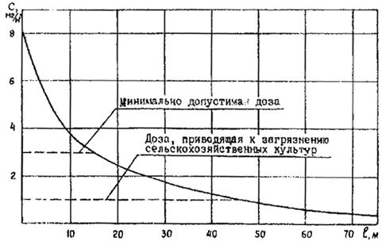
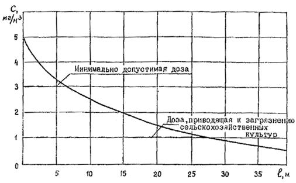
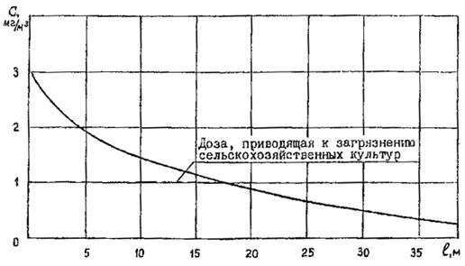
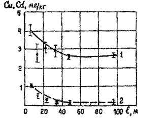
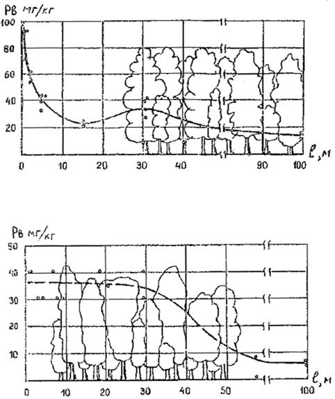
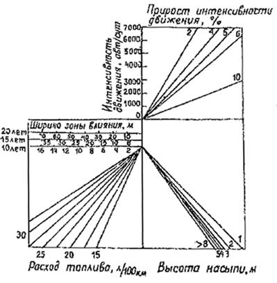
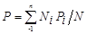

|
|
Министерство связи Российской Федерации ГОСУДАРСТВЕННЫЙ
ОРДЕНА ТРУДОВОГО КРАСНОГО ЗНАМЕНИ ГИПРОСВЯЗЬ |
ВЕДОМСТВЕННЫЕ СТРОИТЕЛЬНЫЕ НОРМЫ
ИНСТРУКЦИЯ
ПО ПРОЕКТИРОВАНИЮ
линейно-кабельных сооружений связи
ВСН 116-93
Минсвязи России
Гипросвязь Москва 1993
РАЗРАБОТАНЫ Государственным институтом по изысканиям и проектированию сооружений связи (Гипросвязь) Минсвязи России (Е.И. Степанов).
ВНЕСЕНЫ Государственным институтом по изысканиям и проектированию сооружений связи (Гипросвязь) Минсвязи России.
ПОДГОТОВЛЕНЫ К УТВЕРЖДЕНИЮ Отделом инвестиционной политики Минсвязи России.
|
Министерство
связи Российской Федерации |
Ведомственные строительные нормы |
ВСН 116-93 Минсвязи России |
|
Инструкция по проектированию линейно-кабельных сооружений связи |
Взамен |
|
|
ВСН-116-87 Минсвязи СССР |
Настоящая Инструкция распространяется на проектирование нового строительства и реконструкцию действующих кабельных линий передачи магистральной, внутризоновых и местных (городской и сельской) сетей Взаимоувязанной сети связи Российской федерации (ВСС России) и сетей проводного вещания.
Инструкция не распространяется на:
морские кабельные линии передачи;
внутриобъектовые сети.
1.1. В проектах должны предусматриваться наиболее совершенные в техническом отношении типы кабелей, оборудования, материалов и механизмов, а также индустриальные методы строительства.
|
Внесены Государственным институтом по изысканиям и проектированию сооружений связи Гипросвязь Минсвязи России |
Утверждены приказом Министерства связи Российской Федерации от 15.07.1993г. № 168 |
Срок введения
с 01.01.19994г. |
1.2. При разработке проектов следует принимать технические решения, обеспечивающие экономное расходование материальных ресурсов, снижение материалоемкости, трудовых затрат, а также оптимальные условия эксплуатации кабельных линий связи.
Порядок выполнения проектных работ, состав и объем проектной документации должны соответствовать требованиям СНиП 11-01-95, стандартов СПДС и эталонов проектов (рабочих проектов), рабочих чертежей.
1.3. Проектирование линейно-кабельных сооружений должно осуществляться с учетом перспективного развития первичных сетей связи.
1.4. Тип электрических и оптических кабелей связи определяется системой передачи.
Выбор и применение марок кабелей связи по условиям прокладки должен производиться, как правило, в соответствии с номенклатурой ГОСТ и ТУ на их изготовление, а также с учетом данных, приведенных в приложении 1.
1.5. Линейно-кабельные сооружения на магистральных участках абонентских линий ГТС должны предусматриваться к строительству для тех зданий, которые на момент проведения изысканий существуют или предусмотрены к строительству на период пуска АТС.
2.1. Кабельные линии передачи первичной сети ВСС России по назначению подразделяются на:
а) магистральные кабельные линии связи (МКЛС), прокладываемые между сетевыми узлами первого класса;
б) внутризоновые кабельные линии связи (ВЗКЛС), прокладываемые между сетевыми узлами второго класса;
в) магистральные соединительные кабельные линии связи (МСКЛС), прокладываемые между сетевыми станциями и сетевыми узлами магистральной первичной сети;
г) местные кабельные линии связи, прокладываемые в пределах города (населенного пункта) или сельского района. Они включают в себя межстанционные в и межузловые кабельные линии связи, прокладываемые между сетевыми станциями и узлами третьего класса и абонентские линии.
Абонентские кабельные линии связи при шкафной системе построения местной сети делятся на магистральные (от АТС до шкафа телефонного распределительного) и распределительные (от шкафа до распределительной коробки) участки, а также на абонентскую проводку, а при бесшкафной системе построения местной сети - на магистральные (от АТС до распределительных коробок) участки и абонентскую проводку.
2.2. Кабельные линии сетей проводного вещания подразделяются на:
а) I класса - фидерные линии с номинальным напряжением свыше 360 В;
б) II класса - фидерные линии с номинальным напряжением до 360 В включительно и абонентскую линию;
2.3. По условиям прокладки и эксплуатации кабельные линии подразделяются на:
подземные в грунте, включая подводные участки кабельных переходов через водные преграды;
подземные в кабельной канализации, коллекторах, тоннелях метрополитена; подвесные; морские.
3.1. Электрические кабели, проложенные и смонтированные на элементарных кабельных участках магистральных и внутризоновых кабельных линиях связи по электрическим параметрам по постоянному и переменному току должны соответствовать ОСТ 45.01-86 "Нормы электрические на элементарные кабельные участки и кабельные секции аналоговых и цифровых систем передач, Минсвязи СССР.
3.2. Электрические параметры абонентских и соединительных кабельных линий местных первичных сетей по постоянному и переменному току должны соответствовать ОСТ 45.36-86 "Линии кабельные, воздушные и смешанные городских телефонных сетей" Минсвязи СССР.
3.3. Виды и объемы электрических измерений и испытаний для оценки электрического состояния проложенного и смонтированного электрического кабеля на магистральных, внутренних и местных кабельных линиях связи должны предусматриваться в проектно-сметной документации в соответствии с "Отраслевыми строительно-технологическими нормами на монтаж сооружений связи, радиовещания и телевидения" - ОСТ-600-93, Минсвязи России.
3.4. Линии сетей проводного вещания должны соответствовать "Электрическим нормам на тракты звукового вещания сетей проводного вещания", Минсвязи СССР.
3.5. Нагрузка линий сетей проводного вещания при определении построения сети и выбора кабелей должна приниматься на перспективный срок, соответствующий расчетному сроку генерального плана города или плана районной планировки. Напряжение линии должно приниматься, исходя из нагрузки на десятилетний период.
3.6. Длины элементарных кабельных участков на кабельных линиях с электрическим и оптическими кабелями связи следует принимать в соответствии с техническими данными используемых аналоговых, цифровых и волоконно-оптических систем передачи (ВОСП) и в соответствии с электрическими и оптическими параметрами применяемых марок кабелей.
Электрическая и оптическая длина проложенных и смонтированных на элементарных кабельных участках кабелей должна соответствовать протяженности трассы, умноженной на коэффициенты К=1,01 для электрических кабелей и на K=1,015 - для оптических кабелей связи.
4.1. При новом строительстве МКЛС и МСКЛС должны применяться, как правило, кабели оптические (ОК) одномодовые типа РКП с числом омических волокон (ОВ) 4 и 8 для работы волоконно-оптических систем передачи (ВОСП) на длине волн 1,3 и 1,55 мкм. При необходимости возможно также применение ОК с числом ОВ более 8.
4.2. При новом строительстве ВЗКЛС должны применяться линейные OK марок ОЗКГ-1 с числом градиентных оптических волокон 4 и 8 для работы ВОСП на длине волны 1,3 мкм, а также одномодовые ОК типа ОКЛ с числом ОВ 4 и 8 для работы ВОСП на длине волн 1,3 и 1,55 мкм.
4.3. При реконструкции существующих МКЛС (МСКЛС) и ВЗКЛС с электрическими кабелями для подключения в линию необслуживаемых усилительных, регенерационных пунктов (НУП, НРП) следует предусматривать к прокладке кабельные вставки электрических кабелей аналогичных марок с линейными кабелями: кабели коаксиальные магистральные с парами типа 2,5/9,4 типа КМ-4 и КМА-4 (ГОСТ 10971-78*); кабели коаксиальные магистральные малогабаритные с парами типа 1,3/4,6 типа МКТ-4 и МКТА-4 (ТУ 16.505.027-76); кабели коаксиальные внутризоновой связи типа ВКПА-10, БВКПА-10 (ТУ 16.705.318-84); кабели связи симметричные высокочастотные типа МКС 4´4´1,2 в алюминиевой, стальной гофрированной оболочках (ГОСТ 15125-92); кабели связи высокочастотные одночетверочные типа ЗК 1´4´1,2 в алюминиевой и пластмассовой оболочках (ТУ 16.505.233-78).
4.4. На местных первичных сетях должны применяться:
на межстанционных и межузловых соединительных кабельных линиях ГТС - кабели оптические типа ОК-50 с числом градиентных ОВ 4 и 8 для работы ВОСП на длине волны 0,85 мкм и типа ОКК-50, ОКК-10 с числом градиентных, одномодовых СВ 4,8 и 16 для работы ВОСП на длине волны 1,3 мкм, а также электрические кабели городские телефонные типа ТП (ГОСТ 22498-88) и кабели связи симметричные высокочастотные типа МКС 4´4´1,2 и 7´4´1,2 в алюминиевой и стальной гофрированной оболочках (ГОСТ 15125-92) для оборудования цифровыми системами передачи;
на межстанционных соединительных кабельных линиях СТС - электрические кабели местной связи высокочастотные типа КСПЗ 1´4´0,9, КСПЗ 2´4´0,9 (ТУ 16.К71-061-89) для оборудования цифровыми системами передачи;
На абонентских кабельных линиях - электрические кабели городские телефонные типа ТП (ГОСТ 22498-88), телефонные типа КСПЗ 1´4´0,64 (ТУ16.К71-007-87), типа КСПЗ 1´4´0,64 (ТУ16.К71-061-89) и кабели телефонной связи и радиофикации однопарные типа ПРППМ (ТУ16.705.450-87).
На межстанционных соединительных и абонентских кабельных линиях ГТС, при необходимости, могут также применяться кабели городские телефонные типа Т в свинцовой и алюминиевой оболочках (ТУ16.К71-008-87).
4.5. Типы, параметры оптических кабелей связи и области их применения приведены в приложении 1.
4.6. На сетях проводного вещания должны применяться:
кабели телефонной связи и радиофикации однопарные марок ПРППМ (ТУ16.705.450-87) и кабель проводного вещания марки МРМП 1´2´1,2 (ТУ.16.К71.006-87);
кабели проводного вещания с гидрофобным заполнением марок РБПЗЭП, РМПЗЭП, РБПЗЭПБ, РМПЗЭПБ однопарные с диаметром токопроводящих жил 1,2 мм (ТУ16.КТ71.006-87).
5.1. Размещение трасс (площадок) для строительства линий связи (кабельных, воздушных и др.) следует осуществлять согласно требований "Земельного Кодекса РСФСР" на землях связи:
вне населенных пунктов и сельских поселениях - главным образом вдоль дорог, существующих трасс и границ полей севооборотов;
в городах, рабочих, курортных, дачных поселках - преимущественно на пешеходной части улиц (под тротуарами) и в полосе между красной линией и линией застройки.
5.2. Полосы земельных участков для строительства кабельных линий связи вдоль автомобильных дорог следует размещать с выполнением следующих основных требований:
в придорожных зонах существующих автомобильных дорог, по возможности, вблизи их границ полос отвода и с учетом того, чтобы вновь строящиеся линии связи не вызывали необходимость их переноса в дальнейшем при реконструкции автомобильных дорог;
размещения полос земель связи на землях наименее пригодных для сельского хозяйства вследствие загрязнения выбросами автомобильного транспорта (приложение 2).
Соблюдения допустимых расстояний приближения полосы земель связи к границе полосы отвода автомобильных дорог различной категории (определяется условиями перспективного развития конкретной автомобильной дороги и требуемого уширения ее полосы отвода).
Ширина полосы земель связи на каждой стороне придорожной зоны автомобильной дороги определяется перспективой прокладки кабелей связи с учетом нормируемой ширины земли, необходимой при строительстве линий связи согласно СН 461-74 и их охранной эксплуатационной зоной.
5.3. Трассу кабельной линии вне населенных пунктов следует выбирать в зависимости от конкретных условий на всех земельных участках, в том числе в полосах отвода, автомобильных и железных дорог, охранных и запретных зонах, а также на автодорожных и железнодорожных мостах, в коллекторах и тоннелях автомобильных и железных дорог.
5.4. В отдельных случаях, на коротких участках, допускается отклонение трассы кабельной линии связи от автомобильной дороги в целях ее спрямления для сокращения длины трассы.
Отклонение трасс кабельных линий от автомобильных дорог допускается также при вынужденных обходах болот, зон возможных затоплений, обвалов, селевых потоков и оползней.
В условиях Сибири, Дальнего Востока и Севера, где дорожная сеть развита слабо, кабельные линии связи допускается прокладывать в отдалении от дорог.
5.5. В особо неблагоприятных условиях местности в придорожной зоне - переувлажненные грунты (болота, трясина) глубиной более 2 м, неустойчивые (подвижные) грунты и оползневые участки, застроенность, смененные условия горной местности, допускается размещение и прокладка кабеля в полосе отвода автомобильных дорог, а в исключительных случаях - по обочине автомобильной дороги.
5.6. При прокладке кабеля по обочине автомобильной дороги на насыпи он должен располагаться в теле насыпи на расстоянии от ее края не менее глубины прокладки кабеля. Порядок и способ выполнения работ, необходимость строительства кабельной канализации устанавливается проектом по согласованию с Управлением эксплуатации автомобильной дороги.
5.7. При выборе трасс кабельных линий вне населенных пунктов и в населенных пунктах следует руководствоваться минимально допустимыми расстояниями прокладки кабелей связи и проводного вещания до других подземных и наземных сооружений согласно "Отраслевых строительно-технологических норм на монтаж сооружений связи радиовещания и телевидения" ОСТН-600-93, Минсвязи России.
5.8. Трассы кабельных линий связи вне населенных пунктов при отсутствии автомобильных дорог могут размещаться вдоль железных дорог и продуктопроводов.
В полосах отвода железных дорог кабельные линии связи и высоковольтные линии автоблокировки и диспетчерской централизации (ВЛ СЦБ) должны по возможности, размещаться по разные стороны пути. При вынужденном размещении этих сооружений на одной стороне пути прокладка кабелей связи должна предусматриваться за ВЛ СЦБ со стороны поля. При размещении трассы прокладки кабеля связи в полосе отвода железных дорог следует также учитывать планируемое в перспективе строительство дополнительных путей.
5.9. При отсутствии дорог трассы кабельных линий связи следует, по возможности, размещать на землях несельскохозяйственного назначения или непригодные для сельского хозяйства либо сельскохозяйственные угодия худшего качества по кадастровой оценке, а также на землях лесного фонда за счет непокрытых лесом площадей, занятых малоценными насаждениями, с максимальным использованием существующих просек. Для строительства кабельных линий связи допускается предоставление земель более высокого качества. В случаях, когда прокладка кабеля вынужденно предусматривается по пахотным землям, проектом организации строительства необходимо учитывать ограничения времени производства работ нa период, необходимый для уборки урожая и осуществления посевов сельскохозяйственных культур.
5.10. Трассы кабельных линий при прохождении их в районах вечной мерзлоты на участках с переувлажненными грунтами, буграми пучения, морозобойными трещинами, наледями и с проявлениями термокарства и солифлюкации должны выбираться в соответствии с рекомендациями "Технических указаний по проектированию, строительству в эксплуатации кабельных линий связи в районах вечной мерзлоты", Минсвязи СССР.
5.11. Выбор оптимального варианта трассы кабельной линии и его оценку следует осуществлять исходя из основных условий:
Минимальной длины трассы;
размещения трассы, как правило, в обход населенных пунктов;
наименьшего числа пересечений с автомобильными, железными дорогами, с подземными сооружениями и с водными преградами выполнения наименьшего объема работ по строительству линейно-кабельных сооружений;
возможности максимального применения при строительстве машин, механизмов и кабелеукладочной техники;
минимальных затрат по защите кабелей от ударов молнии, всех видов опасных и мешающих электромагнитных влияний и коррозии;
обеспечения лучших условий эксплуатации линейных сооружений и надежной их работы.
5.12. Необслуживаемые усилительные и регенерационные пункты следует располагать вдоль трассы кабельной линии, по возможности, в непосредственной близости от оси прокладки кабеля, как правило, в незаболоченных и незатапливаемых паводковыми водами местах. При невозможности выполнения этих требований инженерными проектными решениями по установке НУП (НРП) должны обеспечиваться нормальные условия их эксплуатации (устройство, при необходимости, подходов, мостиков и др.).
6.1.1. Выбор марок оптических и электрических кабелей должен осуществляться в соответствии с преимущественной областью их применения согласно ГОСТ и ТУ, исходя из условий их прокладки и защиты от ударов молнии, внешнего электромагнитного влияния, коррозии, а также защиты от грызунов.
6.1.2. Кабель ПРППМ следует применять на линиях проводного вещания II класса с прокладкой его в грунте и на отдельных участках линий в собственной (не совмещенной с кабелями связи) кабельной канализации, а также на абонентских линиях СТС, как правило, в грунте и в исключительных случаях в кабельной канализации.
6.1.3. Кабель МРМП следует применять на линиях проводного вещания I класса с прокладкой в грунте и на отдельных участках линий в собственной (не совмещенной с кабелями связи) кабельной канализации, а также на линиях II класса, когда кабель ПРППМ не обеспечивает необходимое затухание линии.
6.1. Кабели с гидрофобным заполнением РБПЗЭП (с алюмомедными жилами, экранированный) и РМПЗЭП (с медными жилами, экранированный) следует применять на линиях проводного вещания II класса с прокладкой в общей (с кабелями связи) кабельной канализации, коллекторах, технических подпольях и в грунте, а также на линиях проводного вещания I класса с прокладкой в коллекторах, технических подпольях, в грунте и на отдельных участках в собственной (не совмещенной с кабелями связи, кабельной канализации).
6.1.5. Кабели с гидрофобным заполнением РБПЗЭПБ (с алюмомедными жилами, экранированный, со стальной бронелентой) и РМПЗЭПБ (с медными жилами, экранированный со стальной бронелентой) следует применять на линиях проводного вещания II класса в общей (совмещенной с кабелями связи) кабельной канализации и на линиях I и II классов с прокладкой в грунт на заболоченных и зараженных грызунами участках местности.
6.1.6. Кабели РМПЗЭП и РМПЗЭПБ (с медными жилами) следует применять в тех случаях, когда нельзя обеспечить соблюдение электрических норм на тракты звукового вещания с применением кабелей РБПЗЭП и РБПЗЭБП (с алюмомедными жилами).
6.2.1. Прокладка кабелей связи в грунтах I-III групп, а также в грунтах IV группы (при условии выполнения двух-трехкратной пропорки грунта) должна производиться бестраншейным способом с применением кабелеукладочной техники. Отступление от этого правила должно быть обосновано в проекте.
Разработка котлованов для установки НУП (НРП), монтажа муфт, для осуществления бестраншейных переходов через автомобильные и железные дороги, а также траншей для прокладки кабелей и заземляющих устройств, прокладка кабелей в готовую траншею, засыпка траншей и котлованов, расчистка просек, корчевка пней, планировка местности вдоль трасс - должны, как правило, предусматриваться механизированным способом с применением машин, механизмов и средств малой механизации.
6.2.2. Проектные решения по строительству линейно-кабельных сооружений должны обеспечить уровень их механизации не менее:
80% - при выполнении земляных работ;
87% - по прокладке кабелей кабелеукладчиками;
67% - по протяжке кабелей в кабельной канализации.
Снижение уровня механизации линейных работ против приведенных выше норм должно быть обосновано.
6.2.3. При разработке траншей и котлованов для прокладки кабелей в скальных грунтах следует использовать буровзрывную технику, однако, этот способ работ необходимо применять только в тех случаях, когда исключена возможность применения для этих целей существующей строительной техники.
6.2.4. Минимальные расстояния от кабелей связи, проводного вещания или трубопровода кабельной канализации до других подземных и наземных сооружений при сближении или пересечении с последними должны соответствовать "Отраслевым строительно-технологическим нормам на монтаж сооружений связи, радиовещания и телевидения" - OCTH-600-93, Минсвязи России.
6.2.5. Глубина прокладки оптических и электрических кабелей (бронированных и небронированных) в грунтах I-IV группы должна применяться:
1,2 м - на МКЛС и МСКЛС;
1,2 м - для оптических кабелей на ВЗКЛС и на межстанционных соединительных линиях ГТС;
0,9 м - для электрических: кабелей на ВЗКЛС и кабелей линий проводного вещания I класса;
0,8 м - для электрических кабелей на местных (городских и сельских) первичных сетях вне населенных пунктов и 0,7 м - в населенных пунктах. При необходимости прокладки кабелей на глубине менее указанной должна предусматриваться защита кабелей от механических повреждений в виде укладки над кабелем кирпича (бетонных плит) поверх слоя мягкой земли или песчаного грунта толщиной 0,1 м;
0,8 м - для кабелей линий проводного вещания II класса.
6.2.6. Глубина прокладка электрических и оптических кабелей в грунтах V группы и выше, а также в грунтах IV группы, разрабатываемых взрывным способом или отбойными молотками, должна быть не менее:
при выходе скалы на поверхность - 0,4 м для всех типов кабелей (глубина траншей 0,5 м);
при наличии над скальной породой поверхностного почвенного слоя - 0,6 м для всех кабелей (глубина траншей 0,7 м). При этом заглубление в твердую породу (скалу) должно быть не более 0,5 м. При почвенном слое мощностью от 0,7 до 1,3м кабель должен прокладываться над скальной породой на расстоянии 0,1м.
В вечно мерзлых грунтах и в грунтах с глубоким сезонным промерзанием глубина прокладки кабеля должна определяться проектом в соответствии с рекомендациями, изложенными в "Технических указаниях по проектированию, строительству и эксплуатации кабельных линий связи в районах вечной мерзлоты", Минсвязи СССР.
6.2.7. Способы и глубина прокладки непосредственно в грунт небронированных кабелей в пластмассовых оболочках, а также в металлических оболочках с пластмассовыми защитными шлангами с наружным диаметром менее 20 мм в районах, зараженных грызунами, следует определять проектом с учетом требований, изложенных в приложении 3.
6.2.8. В скальных грунтах V группы и выше, а также в грунтах IV группы, разрабатываемых взрывным способом, отбойными молотками или другими способами и механизмами, кабели следует укладывать в траншею с устройством постели и верхнего покрывающего слоя из разрыхлённой земли или песчаного грунта толщиной по 10 см каждый. Необходимость устройства постели из привозного песчаного грунта обосновывается проектом.
В грунтах IV и V групп, разрыхленных взрывным способом, допускается прокладка бронированных симметричных кабелей всех типов, а также бронированных коаксиальных кабелей связи в алюминиевых оболочках кабелеукладчиком с предварительной одно-трехразовой пропоркой грунта.
6.2.9. Ширина траншей по верху при ручном способе разработки в зависимости от ее глубины и числа прокладываемых кабелей должна соответствовать табл. 3.4 ОСТН-600-93, Минсвязи России.
Ширина траншей, разрабатываемых механизированным способом, должна определяться размерами рабочего органа (ковша, фрезы) землеройной машины.
6.2.10. Кабели линий проводного вещания одного класса могут прокладываться совместно. Расстояние между прокладываемыми в грунте кабелями линий разных классов должно быть не менее 0,5 м для случая, когда кабель линия I класса бронированный и 1 м, когда кабель линии I класса небронированный.
6.2.11. При пересечении автомобильных и железных дорог, проезжей части улиц и трамвайных путей кабели следует прокладывать в асбестоцементных или полиэтиленовых трубах диам. 100 мм с выводом по обе стороны от подошвы насыпи или полевой бровки на длину не менее 1м.
При устройстве переходов в местах с высоким уровнем грунтовых вод и в случаях прокладки труб выше границы промерзания, должны предусматриваться защитные мероприятия от раздавливания кабеля льдом в соответствии с "Инструкцией по защите кабелей связи от сдавливания льдом в затопляемой кабельной канализации", Минсвязи СССР.
Число прокладываемых труб на переходах должно предусматриваться, исходя из норм загрузки каналов кабелями связи различного назначения и с учетом резервных труб согласно табл. 6.1.
Таблица 6.1
|
Число труб, прокладываемых через автомобильные и железные дороги |
Число резервных труб |
|
от 1 до 3 |
1 |
|
от 4 до 8 |
2 |
Примечания: 1. Для кабелей сетей проводного вещания и одинарных кабелей СТО резервные трубы не должны предусматриваться.
2. Для прокладки кабелей сетей проводного вещания и однопарных кабелей СТО допускается прокладка труб с внутренним диаметром менее 100 мм.
6.2.12. При пересечении постоянных грунтовых непрофилированных дорог, в том числе съездов с автомобильных дорог, допускается прокладка кабелей связи в заранее подготовленную траншею без труб, но с покрытием их кирпичом или железобетонными плитами.
При прокладке кабелей связи кабелеукладочной техникой на пересечениях с полевыми дорогами и съездами с автодорог указанные меры защиты от механических повреждений предусматриваться не должны.
6.2.13. При прокладке кабелей на местности с уклоном свыше 30° рытье траншей на подъемах и спусках должно производиться зигзагообразно (змейкой) с отклонением от средней линии на 1,5 м и длиной отклонения 5 м. При этом на уклонах 30-45° прокладываются кабели связи с ленточной броней, при уклоне свыше 45° - кабели связи, бронированные стальными оцинкованными круглыми проволоками. В этих случаях кабель прокладывают вручную.
6.2.14. В особо неустойчивых грунтах (на болоте, в трясине) соединительные муфты следует устанавливать на сваях. В отдельных случаях допускается вынос муфт на обочину или откос дороги.
На оползневых участках трасс прокладка кабеля должна предусматриваться, как правило, с использованием существующих противооползневых дорожных сооружений. За пределами дорожных защитных сооружений прокладка кабеля на оползневых участках допускается в исключительных случаях с выполнением соответствующих мер его защиты.
6.2.15. Прокладка кабелей в непосредственной близости или в пределах охранных зон сооружений связи должна предусматриваться в соответствии с требованиями "Инструкции по проведению работ в охранных зонах магистральных и внутризоновых кабельных линий связи", Минсвязи СССР.
6.2.16. При необходимости прокладки кабелеукладчиком 3-4 кабелей связи в одном направлении их следует предусматривать по двум трассам, расположенным одна от другой на расстоянии не более 1 м. Указанное требование не относится к прокладке кабелеукладчиком кабелей типа ПРППМ.
6.2.17. При проектировании кабельных линий связи в лесистой (таежной) местности следует максимально использовать существующие лесные дороги и просеки. В случае, если на отдельных участках трасс не представляется такая возможность, следует предусматривать вырубку или расчистку просек в зависимости от типа применяемых машин и механизмов: а также способов производства работ. Ширина вырубки просек должка быть обоснована проектом.
6.2.18. При выборе места сооружения кабельного перехода через железнодорожные пути и автомобильные дороги, а также трамвайные пути необходимо соблюдать следующие требования:
длина перехода должна быть наименьшая. При этом следует учитывать перспективу развития железнодорожной сети или расширения автодорожного проезда;
угол пересечения трубопровода (блока труб) должен быть, как правило, 90°, но не менее 60°;
переходы следует располагать в местах с минимальным числом путей и на прямолинейных участках дорог.
Устройство переходов через железнодорожные пути на стрелках и крестовинах не допускается.
Проектирование кабельных переходов через электрифицированные железные дороги постоянного и переменного тока, пути трамваев и метрополитена поверхностного заложения должно производиться с соблюдением ГОСТ 67-78.
6.2.19. При определении потребного количества прокладываемых кабелей в проектах должны предусматриваться их запасы с учетом неровности местности, укладки кабелей в грунт, а также выкладки их по форме котлованов, колодам и расхода на разделку концов кабелей при проведении электрических измерений, испытаний и сращивании их строительных длин. Нормы расхода кабелей на 1 км трассы приведены в табл. 6.2.
Таблица 6.2
|
Количество кабеля на 1 км трассы (км) |
|
|
Электрические кабели |
|
|
В грунте |
1,02 |
|
В кабельной канализации |
1,02 |
|
В коллекторе |
1,01 |
|
Через водные преграды |
определяется проектом |
|
В грунтах, подверженных пучению |
1,04 |
|
Подвесные кабельные линии связи |
1,025 |
|
Оптические кабели |
|
|
В грунте |
1,02 |
|
В кабельной канализации |
1,057 |
|
В коллекторе |
1.02 |
6.2.20. Прокладка оптических и электрических кабелей на секции ОУП-ОУП (ОРП-ОРП) или ОП-ОРП (ОП-ОРП) на магистральных и внутризоновых линиях связи должна предусматриваться в проектах в направлении от станции А (головной) к станции Б, а на кольцевых линиях - в направлении трассы по часовой стрелке.
6.3.1. Прокладка оптических кабелей в кабельной канализации должна осуществляться, как правило, в свободных каналах и расположенных, по возможности, в середине блока по вертикали и у края по горизонтали.
В свободном канале допускается прокладка не более пяти-шести однотипных оптических кабелей. Использовать занятый оптическими кабелями канал для прокладки электрических кабелей не допускается.
6.3.2. Прокладка небронированных оптических кабелей в занятом канале кабельной канализации электрическими кабелями должна предусматриваться в предварительно проложенной полиэтиленовой трубе.
Оптические кабели с броней из стеклопластиковых стержней, стальных проволок, лент с защитной полиэтиленовой оболочкой поверх брони могут предусматриваться к прокладке как по свободным, так и по занятым каналам без прокладки полиэтиленовой трубы.
6.3.3. Электрические кабели типа KМ-4, КМА-4 должны предусматриваться к прокладке только в свободном канале кабельной канализации. Кабели типа МКТ-4, МКТА-4 и ВКПА-10 допускается прокладывать в одном (отдельном) канале, но не более трех кабелей. В одном канале допускается совместная прокладка трех-четырех кабелей типа МКС емкостью 4 и 7 четверок, используемых однотипными системами передачи и имеющих одинаковые уровни передачи, а также низкочастотных кабелей всех типов и высокочастотных кабелей при условии, что сумма диаметров прокладываемых кабелей нe должна превышать 0,76 диаметров канала.
6.3.4. Кабели коаксиальные магистральные типа КМ-4, КМА-4, а также кабели городские телефонные типа ТП, низкочастотные типа TЗ, T3А с внешним диаметром по оболочке более 40 мм, должны, как правило, предусматриваться к прокладке в нижних рядах блоков кабельной канализации.
6.3.5. Кабели в алюминиевой оболочке типа МКСА и ЗКА встречных направлений передачи аналоговых и цифровых системах передачи могут прокладываться в одном канале кабельной канализации на протяжении всего усилительного (регенерационного) участка.
Кабели типа MКС, ЗКП (ЗКВ) встречных аналоговых и цифровых систем передачи должны прокладываться в разных каналах кабельной канализации.
Допускается, в отдельных случаях, их прокладка в одном канале на протяжении не более 1 км.
6.3.6. Прокладка кабелей сетей проводного вещания в одном блоке кабельной канализации совместно с кабелями связи допускается при следующих условиях:
в отдельном канале - на протяжении всей трассы номинальное напряжение кабельной линии не должно превышать 240 В;
использования экранированных кабелей с заземлением экрана с двух сторон при сопротивлении заземляющего устройства согласно ГОСТ 464-79*;
длина участка параллельной прокладки кабелей сетей проводного вещания в кабельной канализации с любым из кабелей связи, размещенных в смежных каналах, не должна превышать 2 км для экранированного кабеля (РБПЗЭП, РМПЗЭП) и 3 км для экранированного и бронированного кабеля (РБПЗЭПБ, РМЗЭПБ);
отсутствие в смежном канале кабелей связи с использованием систем передачи с частотным разделением каналов.
6.3.7. Расстояния между кабелями проводного вещания, прокладываемыми в кабельной канализации, коллекторах, технических подпольях, помещениях ввода кабелей и непосредственно в грунте с кабелями связи должно быть не менее величин приведенных в табл. 6.3.
Таблица 6.3
|
Назначение кабеля проводного вещания и номинальное напряжение в нем, В |
Длина параллельного пробега, км |
Допустимое расстояние, см |
|||
|
между кабелями РБПЗЭП, РИПЗЭП, РБПЗЭПБ, РМПЗЭПБ и НЧ кабелей связи |
между кабелями РБПЗЭП, РМПЗЭП и ВЧ кабелями связи |
между кабелями РБПЗЭПБ, РМПЗЭПБ и ВЧ кабелями связи |
|||
|
в кабеле связи нет цепей звукового вещания |
в кабеле связи есть цепи звукового вещания |
||||
|
Магистральный фидер ВЧ-960, ВЧ-120 |
0,05 |
4 |
11 |
32 |
14 |
|
0,5 |
12 |
34 |
65 |
30 |
|
|
10 |
13 |
38 |
78 |
34 |
|
|
2,0 |
14 |
41 |
88 |
38 |
|
|
Распределительный фидер ВЧ-240 ВЧ-30 |
0,05 |
3 |
6 |
16 |
7 |
|
0,5 |
6 |
17 |
35 |
15 |
|
|
1,0 |
6 |
19 |
39 |
17 |
|
|
2,0 |
6 |
20 |
44 |
19 |
|
|
3,0 |
7 |
22 |
46 |
20 |
|
|
4,0 |
8 |
23 |
47 |
20 |
|
6.3.8. В коллекторах кабели должны размещаться следующим образом:
при двухрядном расположении кабели проводного вещания могут прокладываться как по одну, так и по другую сторону прохода. При этом, с одной стороны прохода должны быть проложены сверху кабели проводного вещания, ниже кабели связи и под ними теплопроводы. С другой стороны прохода - сверху силовые кабели, ниже кабели связи проводного вещания, затем кабели связи и под ними водопроводы;
при однорядном расположении сверху должны быть проложены силовые кабели, под ними кабели проводного вещания, ниже кабели связи, еще ниже водо- и теплопроводы.
6.3.9. При параллельной прокладке в коллекторах кабелей связи и силовых кабелей кабели связи должны располагаться на 20 см ниже силовых кабелей.
6.3.10. При прокладке в коллекторах кабелей связи последние должны располагаться не менее чем на 10 см выше труб водопровода, теплосети и других трубопроводов.
6.3.11. В тоннелях метрополитена оптические кабели связи должны прокладываться с внешними полиэтиленовыми оболочками, не распространяющими горение, а также электрические бронированные кабели с защитным покровом типа БГ, а в вертикальных шахтах на вертикальных спусках - кабели с защитным покровом типа К.
6.4.1. Строительство кабельной канализации должно предусматриваться в городах и поселках городского типа в районах с законченной горизонтальной и вертикальной планировкой для прокладки кабелей связи и проводного вещания, а также при расширении местных телефонных сетей, когда отсутствует возможность прокладки кабелей в существующей кабельной канализации.
6.4.2. В городах и поселках городского типа прокладка кабелей в грунт допускается на участках, не имеющих законченной горизонтальной и вертикальной планировки, подверженных пучению, заболоченных, с вечной мерзлотой, по улицам, подлежащим закрытию, перепланировке или реконструкции города и в пригородных зонах.
6.4.3. При выборе трасс кабельной канализации необходимо стремиться к тому, чтобы число пересечений с уличными проездами, дорогами и рельсовыми путями было наименьшим. Кабельная канализация должна предусматриваться к строительству на уличных и внутриквартальных проездах с усовершенствованным покрытием.
6.4.4. Емкость блоков проектируемой кабельной канализации на отдельных ее участках должна определяться, исходя из:
значения этих участков в общей системе построения линейных сооружений;
средней загрузки каналов, используемых для прокладки кабелей на магистральных участках абонентских линий ГТС;
потребности в каналах для кабелей межстанционных связей ГТС и СТС, кабелей для организации сетей некоммутируемых каналов (прямых проводов), кабелей магистральной и внутризоновой сетей, кабелей сетей проводного вещания, а также кабелей другого назначения;
необходимости каналов для распределительной сети ГТС, СТС;
потребности в резервных каналах;
учета развития различных сетей на перспективу;
характера уличного проезда и типа его дорожного покрытия.
6.4.6. При прохождении проектируемых трасс кабельной канализации по основным уличным магистралям и улицам населенного пункта:
на подходах к телефонным станциям в пределах кварталов, где она размещается;
на вводах в станции (подстанции) с учетом, ввода кабелей и на предельную ее емкость, потребностей межстанционной сети и кабелей другого назначения;
на переходах через уличные проезды, железнодорожные и трамвайные пути;
на автомобильных, железнодорожных мостах через водные преграды и на эстакадах - емкость блоков кабельной канализации должна определяться расчетом с учетом перспективного развития городской телефонной сети, норм загрузки каналов оптическими, электрическими кабелями.
6.4.6. При расчете числа каналов кабельной канализации на ГТС необходимо учитывать следующее:
на всех участках, где определена необходимость прокладки распределительных кабелей, следует предусматривать один распределительный канал (необходимость дополнительного канала дли распределительных кабелей на отдельных участках должна обосновываться проектом). В исключительных случаях, при обосновании в проекте, допускается прокладка кабеля емкостью до 200 пар магистрального участка абонентской сети в кабельной канализации, предназначенной для прокладки распределительного кабеля;
в кабельной канализации, где предусматривается прокладка хотя бы в одном из каналов одного или нескольких кабелей на магистральных участках абонентской сети общей емкостью 400 пар или более, а также, где емкость существующих кабелей в одном из каналов равна или превышает 400 пар, следует предусматривать один резервный канал на случай замены поврежденного кабеля;
на участках между магистральными направлениями кабельной канализации и распределительными шкафами емкостью 1200´2 должны предусматриваться четыре канала, при емкости распределительного шкафа 600´2 - три канала, при емкости шкафа 300´2 - два канала кабельной канализации, а при емкости шкафа 150´2 - один канал кабельной канализации.
6.4.7. Строительство специальных коллекторов для прокладки в них кабелей связи должно предусматриваться в исключительных случаях. Строительство их на вводе кабелей в здания предприятий связи (АТС, АМТС и др.) следует осуществлять при числе вводимых каналов свыше 48.
6.4.8. В пределах внутриквартальных территорий многоэтажной застройки необходимо использовать проходные и. полупроходные коллекторы малого сечения (оценки), строительство которых осуществляется при застройке города.
6.4.9. Трубопроводы кабельной канализации следует предусматривать из:
асбестоцементных труб с внутренним диаметром 100 мм;
труб из вторичного полиэтилена с наружным диаметром 63 мм и 110 мм;
бетонных труб с внутренним диаметром 90-100 мм.
6.4.10. Для малоканальных блоков кабельной канализации магистральных участков абонентской сети (до двух труб включительно), где на перспективу не предусматривается увеличение емкости блоков, а также для распределительных сетей необходимо использовать полиэтиленовые трубы с внутренним диаметром 55-58 мм.
6.4.11. Минимально допустимое заглубление трубопроводов кабельной канализации в середине пролета должно соответствовать величинам согласно OCTН-600-93 Минсвязи России, а при пересечении рельсовых путей железных и автомобильных дорог и трамвая - величинам, приведенным в табл. 6.4.
Таблица 6.4
|
Минимальное расстояние от поверхности грунта (дорожного покрова) до верха трубы, м |
|||
|
Под рельсовыми путями трамвая |
Под рельсовыми путями железных дорог |
Под автомобильными дорогами |
|
|
Асбестоцементные и полиэтиленовые |
1,0 |
Методом продавливания, горизонтальное бурение - 2,0 |
1,4 |
|
Бетонные |
1,0 |
При проколе -2,5м |
- |
Примечания: 1. При прокладке труб под рельсовыми путями железных дорог, трамвая, под автомобильными дорогами открытым способом на меньшей глубине до 0,5 м должна предусматриваться дополнительная механическая защита труб бетонными плитами.
2. Прокладка полиэтиленовых труб под проезжей частью улиц без защитных кожухов не допускается.
6.4.12. Глубина траншей для кабельной канализации должна обеспечивать возможность докладки трубопроводов на направлениях (участках), где при перспективном развитии ГТС будет осуществляться увеличение ее емкости.
6.4.13. Смотровые устройства (колодцы) кабельной канализации должны устанавливаться:
проходные - на прямолинейных участках трасс, в мостах поворота трассы не более чем на 15°, а также при изменении глубины заложения трубопровода;
угловые - в мостах поворота трассы более чем на 15°;
разветвительные - в местах разветвления трассы на два (три) направления;
станционные - в местах ввода кабелей в здания телефонных станций.
6.4.14. Типы смотровых устройств (колодцев) кабельной канализации на сетях связи определяются емкостью вводимых в них труб или блоков с учетом перспективы развития сети и должны соответствовать требованиям, приведенным в табл. 6.5.
Таблица 6.5
|
Максимальная емкость блока труб, вводимого в колодец |
Число каналов в основания блока |
Назначение |
|
|
ККС-1 |
1 |
1 |
Устанавливается на распределительных сетях при длине пролета до 60м. Допускается монтаж муфт кабелей ТПП до 50 пар. При транзитной прокладке кабеля (без муфт) емкость проходящих кабеле не должна превышать 100 пар |
|
ККС-2 |
2 |
2 |
Допускается монтаж муфт кабелей ТПП до 200´2´0,5 или 300´2´0,32 |
|
ККС-3 |
6 |
2 |
Допускается монтаж муфт кабелей ТПП до 400´2´0.5; ТГ до 600´2´0,5; ТПП с 0,32 до 800´2 |
|
ККС-4 |
12 |
2 3 4 |
Допускается монтаж кабелей местных сетей емкостью до 1200´2 |
|
ККС-5 |
24 |
4 6 |
Допускается монтаж кабелей местных сетей всех емкостей и установка HPП аппаратуры ИКМ для ГТС |
|
Станционное смотровое устройство ККССр-1 |
36 |
Колодец кабельной канализации связи специального типа, разветвительный на 35 каналов |
|
|
Станционное смотровое устройство ККССр-2 |
48 |
Колодец кабельной канализации связи специального типа, разветвительный на 48 каналов |
|
|
Специальный колодец ККС-5М |
Колодец кабельной канализации связи для размещения контейнеров НРП аппаратуры систем передачи ИКМ-30, ИКМ-30-4, ИКМ-120-4 |
Примечание: Возможность размещения и монтаж муфт кабелей других типов в колодцах должна определяться при разработке проектной документации, исходя из допустимого радиуса их изгиба, размеров муфты, с учетом геометрических размеров смотрового устройства.
6.4.15. Расстояние между колодцами кабельной канализации не должны превышать 150 м, а при прокладке кабелей ТПП с количеством пар 1400 и выше - 120 м. В проектах должны, как правило, предусматриваться пролеты максимально допустимой длины.
6.4.16. На сетях связи должны применяться типовые железобетонные колодцы: полносборные, сборные двухзвенной конструкции, специального типа, а также кирпичные. Проектами преимущественно должны предусматриваться полносборные и сборные железобетонные колодцы. Допускается применение кирпичных колодцев в сухих грунтах в случаях, когда для отдельных объектов строительства требуется их небольшое количество, а также при строительстве нетиповых и станционных колодцев, переустройство существующих с большой загрузкой их кабелями.
Применение кирпичных колодцев или колодцев из других местных материалов должно быть обосновано.
6.4.17. При необходимости увеличения емкости существующей кабельной канализации допускается вместо реконструкции колодцев, строительство новых с размещением их рядом с существующими.
На межстанционных и головных участках перспективных магистральных трасс на районированных сетях, кабельные колодцы малого типа (ККС-3) в проектах не предусматривать.
6.4.18. Колодцы для размещения контейнеров НРП следует устанавливать в непосредственной близости от трассы кабельной канализации, но не далее 10 м от существующих колодцев. В стесненных условиях допускается увеличение этого расстояния до 50 м.
Емкость соединительного блока кабельной канализации должна приниматься с учетом требований раздела 8, но не менее 4 каналов.
6.4.19. При шкафной система построения городской телефонной сети, в зависимости oт телефонной плотности, должны применяться телефонные распределительные шкафы емкостью 1200´2, 600´2, 300´2 и 150´2, как правило, устанавливаемые внутри жилых и общественных зданий (в подъездах, коридорах или специально выделенных помещениях). В исключительных случаях, когда внутри жилых и общественных зданий отсутствуют помещения для размещения распределительных шкафов, допускается их установка у наружных стен зданий или вблизи их.
6.4.20. Максимальная загрузка кабельных распределительных шкафов не должна превышать величин, приведенных в таблице 6.6.
Таблица 6.6
|
Емкость кабельного распределительного шкафа |
|
|
500 |
1200´2 |
|
250 |
600´3 |
|
130 |
300´2 |
|
50 |
150´2 |
6.4.21. Ввод труб и кабелей в распределительные шкафы, устанавливаемые внутри зданий, должен выполняться непосредственно в шкаф. Установка шкафных колодцев в зданиях не допускается.
6.4.22. Кабельную канализацию следует вводить непосредственно в распределительный телефонный шкаф, если расстояние от него до ближайшего колодца не превышает 35 м. При больших расстояниях или при необходимости изменения направления кабельной канализации у распределительных телефонных шкафов должна предусматриваться установка колодцев типа ККС-3.
Для ввода в распределительные телефонные шкафы кабелей магистральных участков абонентской сети, проложенных непосредственно в грунт, у распределительных телефонных шкафов должно предусматриваться строительство колодцев, тип которых следует определять в соответствии с табл. 6.5.
6.4.23. При высоком уровне грунтовых вод в проектах должны предусматриваться мероприятия, ограничивающие попадание воды в колодцы и трубопроводы кабельной канализации (водоотводные дренажи, устройство насыпей и др.).
6.4.24. При разработке проектов строительства кабельной канализации в условиях вечной мерзлоты необходимо учитывать рекомендации, изложенные во Временных технических указаниях по проектированию и строительству кабельной лотковой канализации на переувлажненных грунтах Севера, Минсвязи СССР.
6.4.25. Проектами должны учитываться затраты на восстановление дорожных покрытий и зеленых насаждений, поврежденных при производстве земляных работ. При определении объема работ по вскрытию и восстановлению дорожных покровов следует учитывать принятые габариты траншей и котлованов, а также дополнительно по 0,1 м с каждой стороны при бетонном или асфальтовом покрытии и 0,2 м с каждой стороны при булыжном или кирпичном покрытии.
В обоснованных проектом случаях (при наличии требований местных органов власти) допускается восстановление асфальтового покрытия на всю ширину тротуара.
Траншеи на участках пересечения с дорогами, имеющими усовершенствованные покрытия, должны засыпаться на всю глубину песчаным грунтом в соответствии с и.4.13 СНиП 3.02.01-7.
6.5.1. Подвеску кабелей связи на опорах воздушных линий допускается предусматривать на распределительных участках абонентских ГТС при телефонизации районов индивидуальной застройки, на абонентских и межстанционных линиях СТС, а также на внутризоновых сетях (в горной местности, где подземная прокладка кабелей затруднена, на переходе кабельных линий через глубокие овраги и реки, имеющие обрывистые склоны и др.).
6.5.2. Подвеску кабелей городских и сельских телефонных сетей следует, как правило, предусматривать на опорах существующих воздушных линий связи. Строительство новых столбовых линий для этих целей, без обоснования в проекте запрещается. При необходимости их постройки следует преимущественно использовать железобетонные опоры или деревянные - в железобетонных приставках.
Кабели внутризоновых линий связи типа ВКПА следует подвешивать только на существующих опорах ВЛС.
Для подвески кабелей связи ГТС и СТС в населенных пунктах могут быть также использованы стоечные опоры, устанавливаемые на крышах зданий.
6.5.3. На опорах ВЛС городских и сельских телефонных сетей допускается подвеска кабелей емкостью не более 100 пар, на опорах стоечных линий - не более 30 пар, а на опорах существующих ВЛС - однокоаксиальный кабель типа ВКПА внутризоновых кабельных линий связи.
6.5.4. На опоре ВЛС кабели связи должны размещаться ниже проводов.
Габариты подвесных кабельных линий связи должны соответствовать габаритам, установленным для проводов воздушных линий связи согласно "Правил строительства и ремонта воздушных линий связи и радиотрансляционных сетей*; часть 1, Минсвязи СССР.
Консоли для крепления кабеля с вмонтированным в него тросом, или стального троса для подвески на нем кабеля связи должны устанавливаться на опорах ВЛС на расстоянии 350 мм от нижнего крюка или траверсы.
6.5.5. К подвеске следует предусматривать специальные кабели, содержащие в своей конструкции несущий трос (ТППэпт, КСППт, КСПЗПт, КСППБт. ВКПАПт-10, БВКПАПт-10, ВКПАПут-10, БВКПАПут-10), которые крепятся на опорах к специальным консолям. Допускается подвеска на опорах ВЛС кабелей типа ТППэп, Т, КСПП, КСПЗП на стальном канате из оцинкованных проволок.
6.5.6. Стрелы провеса стальных каналов для подвески кабелей ГТС и СТО должны соответствовать величинам, приведенным в Руководстве по строительству линейных сооружений местных первичных сетей", Минсвязи СССР, а для однокоаксиального кабеля - во Временных технических указаниях по прокладке, подвеске, монтажу, электрическим измерениям и эксплуатации однокоаксиального кабеля типа ВКПА", Минсвязи СССР.
6.5.7. Несущий трос, закрепленный на опорах ВЛС с подвесным кабелем типа ВКПАП, должен быть заземлен:
при вводе в НУП;
на опорах с муфтами, отстоящих от НУП"а на расстоянии порядка 1 и 2 км в каждую сторону;
на опоре с муфтой посредине участка НУП-НУП.
Несущий трос на ВЛС, используемых для подвески кабелей ГТС и СТС должен быть заземлен в начале и конце линии, а также через каждые 250 м. Вне населенных пунктов несущий трос следует заземлять в среднем через 2-3 км. Если участок подвесного кабеля не превышает по длине 2 км, то заземления необходимо оборудовать на концах участка.
6.5.8. Подвеска кабелей проводного вещания должна производиться в соответствии с "Рекомендациями по подвеске кабелей проводного вещания на опорах воздушных линий", Минсвязи СССР.
6.5.9. При использовании существующих ВЛС для подвески кабелей связи, при необходимости, следует предусматривать связанные с этим дополнительные работы.
7.1. Кабельные переходы через водные преграды, в зависимости от назначения кабальных линий и местных условий, могут выполняться:
кабелями, прокладываемыми под водой;
кабелями, прокладываемыми по мостам;
подвесными кабелями на опорах.
7.2. При пересечении кабелем сплавных и судоходных рек место подводного кабельного перехода должно быть выбрано, исходя из следующих требований:
а) места переходов должны располагаться, по возможности, на прямолинейном участке реки минимальной ширины с неразмываемым руслом и пологими берегами, неподверженными разрушениям, вне стоянки судов, плотов, головных сооружений водозабора, паромных переправ, сбросов, сточных вод, мест добычи гравия, песка, полезных ископаемых вне перекатных участков, районов землечерпательных дноуглубительных paбoт, мест заторов льда и водопоя скота, а также с учетом нанесения наименьшего ущерба окружающей среде при строительстве.
При невозможности выбора места перехода с учетом перечисленных требований в проекте должны быть предусмотрены мероприятия по укреплению берегов в подводной и надводных частях и возможность выполнения дноуглубительных работ над кабелями;
б) трасса кабеля через судоходные и сплавные реки, как правило, должна проходить ниже по течению от автомобильных и железнодорожных мостов на дорогах магистрального значения. При отсутствии на реках ледоходов и заторов льда место перехода (выше или ниже моста) определяется проектом в зависимости oт гидрологических особенностей и характеристики данной реки с обеспечением наименьших затрат по устройству речного кабельного перехода и применения наиболее совершенных механизмов при строительстве, а также удобств эксплуатации.
1000 м - через внутренние водные пути, судоходные реки, каналы и водохранилища;
300 м - через сплавные реки;
50-100 м - через несудоходные и несплавные реки.
200 м - через судоходные реки и каналы;
50-100 м - через несудоходные и несплавные реки.
7.5. На МКЛС и ВЗКЛС переходы через водные преграды должны осуществляться, как правило, кабелями, прокладываемыми под водой, а также кабелями, прокладываемыми по мостам.
На кабельных линиях местных первичных сетей и сетей проводного вещания кабельные переходы через водные преграды следует осуществлять, как правило, по мостам. На переходах через несудоходные и несплавные реки шириной до 100 м допускается устройство кабельных переходов с подвеской кабелей емкостью до 100´2 на опорах.
7.6. На переходах магистральных кабельных линий через судоходные и сплавные реки следует предусматривать прокладку кабелей по двум створам на расстоянии не менее 300 м один от другого.
Необходимость резервирования кабелей ВЗКЛС и МСКЛС на переходах через судоходные, сплавные и горные реки, а также кабелей МКЛС, прокладываемых через горные реки, определяется проектом с обоснованием принятых решений.
При наличии на трассе мостов прокладка одного (резервного) кабеля должна осуществляться по мосту. Второй подводный кабель МКЛС на переходе через водную преграду должен прокладываться от автомобильных и железнодорожных мостов на расстоянии согласно п.п. 7.3 и 7.4.
7.7. Резервирование кабелей на кабельных линиях местных первичных сетей ГТС на переходах через водные преграды следует предусматривать только в тех случаях, когда между оконечными станциями (РАТС, УВС, УИС) связь организуется только по одному кабельному направлению.
Резервирование кабелей на кабельных линиях местных первичных сетей ГТС, СТС и сетей проводного вещания на переходах через водные преграды не производится.
7.8. На судоходных и сплавных реках, независимо от их глубины, а также на несудоходных и несплавных реках глубиной до 3 м от рабочего горизонта воды, кабели связи следует прокладывать с заглублением в дно реки.
Кабели на МКЛС, независимо от характера и глубины водных преград должны быть заглублены в дно реки по всему руслу.
7.9. На водохранилищах и озерах, за пределами судового хода, а также на несудоходных и несплавных реках, глубиной более 3 м, при отсутствии особых требований согласовывающих организаций о заглублении кабелей связи, их прокладку следует предусматривать без заглубления в дно. Заглубление кабелей в прибрежной части водоема обязательно, с учетом возможного размыва берегов.
7.10. Через водные преграды со стабильным, не изменяющимся руслом (дном), кабели связи должны прокладываться в дно на глубину не менее 1 м.
Через реки с изменяющимся руслом и особыми гидрогеологическими условиями (горные и предгорные реки, реки с размываемыми берегами) величина заглубления кабеля определяется проектом при этом прокладка кабелей, должна производиться на глубину не менее 0,5 м ниже расчетной отметки возможного размыва дна.
Величина заглубления кабелей в дно русла реки и способа прокладки кабелей должны приниматься в проекте, исходя из гидрогеологических характеристик водной преграды, режима ее эксплуатации, а также с учетом требований согласовывающих организаций.
7.11. При прокладке кабелей через осушительные каналы их заглубление в дно должно осуществляться не менее 1 м с защитой кабелей от механических повреждений железобетонными плитами. При прокладке кабеля, по согласованию с владельцами, в дно осушительных каналов на глубину 2 м, покрытие его железобетонными плитами не требуется.
7.12. Через водные преграды шириной до 300 и глубиной до 6 м со скоростью течения до 1,5 м/с при плавном рельефе дна (включая подводную береговую часть), сложенного из несвязных грунтов не выше IV группы и незасоренного валунами и топляками, кабели связи следует прокладывать бестраншейным способом при помощи ножевых кабелеукладчиков, с предварительной (двух-трехразовой) пропоркой дна реки, с заглублением до 1,2 м.
7.13. На кабельных переходах через реки глубиной до 0,8 м с пологими берегами и плотным невязным дном кабели следует предусматривать к прокладке механизированной, колонной, так же, как и на всем протяжении трассы. На реках глубиной от 0,8 до 6 м (с учетом толщины слоя илистых отложений) прокладку кабелей следует предусматривать с применением кабелеукладчика с протаскиванием его через водную преграду с помощью тракторной лебедки или колонны тракторов, перебазированных на противоположный берег, и с использованием удлиненных тросов.
7.74. Через болота глубиной не более 2 м прокладку кабелей связи необходимо производить бестраншейным способом. При этом при глубине болот до 0,8 м кабели следует прокладывать механизированной колонкой аналогично тому, как и на всем протяжении трассы, а при глубине от 0,8 до 2,0 м, а также на реках с илистым дном, при его слое более 0,4 м - с использованием тракторной лебедки или тракторов и удлиненных тросов.
7.15. Прокладка кабелей ножевыми кабелеукладчиками на переходах вблизи существующих подводных сооружений (кабелей связи, дюкеров, водозаборов) допускается на расстоянии не менее 30 м от них, и не ближе 100 м от переходов через водные преграды силовых кабелей.
7.16. Однопарные кабели СТО и проводного вещания через несудоходные и несплавные реки глубиной до 0,8 м следует прокладывать, как правило, с применением кабелеукладчиков, а при отсутствии такой возможности и на реках глубиной более 0,8 м - без заглубления кабелей в дно реки.
7.17. На речных переходах в русловой части кабеля, прокладываемые без заглубления в дно реки, должны быть вынесены навстречу течению.
Величина выноса, с учетом скорости течения реки и геологических данных ее русла в створе перехода, определяется проектом. При скальных грунтах по всей ширине русловой части вынос кабеля производить не следует.
7.13. В пойменной части трассы кабельного перехода через водную преграду подводный кабель до стыка с подземным кабелем должен прокладываться на глубине прокладки подземного кабеля.
Необходимость большего заглубления кабеля определяется проектом в зависимости от условий согласования.
7.19. Укрепление подводного кабеля в береговой части должно осуществляться прокладкой его в зигзагообразной траншее на протяжении до 50 м, начиная от уреза воды с каждой стороны.
На реках со стабильным каменистым или скальным дном и неразмываемыми берегами прокладка кабеля в зигзагообразной траншее не предусматривается.
7.20. При обрывистых берегах или берегах, имеющих уклон более 30° во избежание крутого спуска кабеля, последний должен быть углублен в берега более чем на проектную глубину. Для соблюдения такого уклона берег должен быть спланирован, а после прокладки кабеля - восстановлен.
7.21. Разветвительные муфты на стыке кабелей верхнего и нижнего створов следует располагать в незатапливаемой части берегов или искусственно созданных возвышениях. Места расположения разветвительных муфт, габариты искусственно создаваемых возвышений, а также материал (песок, щебень, гравий и др.) для их сооружения определяются проектом.
7.22. На кабельных переходах через водные преграды с двумя створами кабелей (верхнего и нижнего), длина обоих кабелей, как правило, должна быть одинаковой. При невозможности соблюдения этого требования отклонение длин кабелей в створах кабельного перехода по затуханию должно быть в пределах нормируемого допуска на отклонение проектной длины кабеля на усилительном (регенерационном) участке от номинальной для соответствующих систем передачи.
В проектах следует предусматривать задействование кабелей каждого створа с включением пар по схемам, обеспечивающим работу 50% систем передачи в каждом кабеле.
7.23. В городах и населенных пунктах при устройстве кабельных переходов через реки и каналы, берега которых имеют гранитную или железобетонную облицовку, кабели через облицовку прокладываются в стальных трубах диам. 100-125 мм. Количество прокладываемых стальных труб определяется проектом с учетом перспективы развития сети и эксплуатационного запаса. На переходах до 12 кабелей должна предусматриваться одна, а на переходах от 13 до 24 кабелей - две резервные трубы для эксплуатационных потребностей. Облицовка берега должна быть восстановлена. Стальные трубы должны иметь на всем протяжении антикоррозионное покрытие.
7.24. На кабальных переходах через реки и каналы в городах и населенных пунктах в береговой части должен устанавливаться колодец на тротуаре или газоне. В стесненных условиях допускается размещение колодца или его части под мостовой.
При числе труб в пакете до 12 включительно проектом должен предусматриваться колодец типа ККС-5, а при числе труб от 13 до 24 - нетиповой колодец. Прокладка на переходе более 24 труб не допускается.
Ввод стальных труб в колодец должен осуществляться через его проем. В стесненных условиях допускается производить ввод труб через дно колодца. Стальные трубы не должны иметь более одного изгиба в вертикальной плоскости, радиус которого не должен превышать допустимого радиуса изгиба, проектируемого к прокладке кабеля.
Пакет стальных труб в подводной части должен вводить за стенку набережной (или отметку наинизшего горизонта воды) на длину не менее 3 м. Должна предусматриваться сварка труб образующих пакет.
7.25. По мосту кабели должны прокладываться в предусмотренных для этого конструкциях (выносных консолях, трубах наружных подвесках и др.) в соответствии с требованием СНиП 2.05.03-84. Способ прокладки кабелей по мосту, а также конструктивные решения должны определяться проектом.
Прокладка кабеля, по возможности, должна предусматриваться полными строительными длинами. Смотровые устройства кабельной канализации на участках подходов к мостам должны располагаться на минимально возможных расстояниях от его береговых опор.
7.26. Если мост имеет разводную часть, то на всем ее протяжении прокладывается подводный кабель. Соединительные муфты с подводным кабелем должны располагаться в смотровых устройствах на пролетных конструкциях моста.
Кабели на спуске в воду должны размещаться в потернах опор моста или на их наружной поверхности. В последнем случае проектом должны предусматриваться меры по защите кабелей от механических повреждений, в том числе и при ледоходе.
7.27. Прокладываемые по мостам кабели, как правило, должны иметь пластмассовые или стальные и алюминиевые оболочки со шланговым пластмассовым покрытием.
Прокладка по мостам кабелей в свинцовых оболочках не допускается.
7.28. На кабельных переходах через внутренние судоходные пути нa судоходных и сплавных реках должны устанавливаться знаки судовой обстановки, оборудуемые в соответствии с Правилами плавания по внутренним судоходным путям РСФСР, Инструкцией по содержанию судоходной обстановки на внутренних водных путях Минречфлота РСФСР, ГОСТ 26600-85.
В городах и поселках городского типа линии электроосвещения для знаков судовой обстановки, как правило, должны быть подземными.
На набережных, облицованных гранитом или бетонными блоками, створные знаки должны устанавливаться непосредственно нa их стенах.
8.1. Вводы кабелей в сетевые узлы, оконечные и промежуточные усилительные пункты, в здания АТС, АМТС, телеграфных станций и других предприятий связи осуществляется через специально оборудованные помещения ввода кабелей (шахты), размещаемые, как правило, в подвальном (цокольном) помещении, а в зданиях без подвала - на первом этаже с устройством приямков в полу помещения.
8.2. К помещениям ввода кабелей и компрессорным (для размещения оборудования содержания кабелей под избыточным воздушным давлением) предъявляются следующие основные требования:
помещение ввода кабелей связи и компрессорная должны располагаться в отдельных помещениях, которые должны быть смежными;
расположение помещений и их площади принимаются в зависимости от состава оборудования и количества вводимых кабелей;
входы в помещения ввода кабелей и компрессорные должны предусматриваться раздельными;
высота помещений ввода кабелей должна быть не менее 3,5 м от пола до низа выступающей части перекрытия при вертикальном расположении разветвительных муфт (перчаток), при горизонтальном их расположении высота помещений ввода кабелей должна быть не менее 2,5 м. Размещать светильники над металлоконструкциями (консолями) запрещается;
в помещениях ввода кабелей и компрессорных следует предусматривать полы цементно-песчаные с железнением, стены и потолок - окрашенные водоэмульсионной краской;
нормативная временная распределительная поверхностная нагрузка на пол принимается:
в помещениях ввода кабелей - длительно действующая 5600 Па (560 кгс/м2), кратковременная 900 Па (90 кгс/м2), а в помещениях компрессорных - длительно действующая и кратковременная 1000 Па;
в коммуникационных вертикальных шахтах не допускается совместная прокладка кабеля связи с силовыми и контрольными кабелями.
Кроме того, следует учитывать технологические требования к указанным помещениям, приведенные во "Временных рекомендациях по предотвращению попадания газа в помещения ввода кабелей предприятий связи" и "Руководстве по герметизации вводов кабелей предприятий связи", Минсвязи СССР.
3.3. В технических зданиях сетевых узлов (СУ), оконечных и промежуточных усилительных пунктов, в зданиях АМТС (МТС), размещаемых в крупных промышленных центрах, а также в АТС, как правило, следует предусматривать одно помещение ввода кабелей. Необходимость устройства двух помещений ввода кабелей в указанные технические здания необходимо обосновывать в проекте.
Ввод кабелей в здания АТС емкостью 10000 номеров и более должен осуществляться с двух противоположных направлений.
8.4. Вводы кабелей следует осуществлять с учетом минимальной их длины внутри зданий, допустимых радиусов изгиба, максимального использования существующих металлоконструкций, а также удобства эксплуатации.
8.5. Для ввода кабелей в проем фундамента или стены здания АТС, АМТС (МТС), телеграфных станций следует закладывать вводный блок из асбестоцементных (бетонных) труб с внутренним диаметром каналов 100 мм. Емкость блока определяется проектом в зависимости от числа вводимых кабелей с учетом запасных каналов на развитие (не менее 100% каналов, занимаемых линейными кабелями по проекту).
8.6. Вводной блок из асбестоцементных (бетонных) труб на вводе в помещение ввода кабелей должен быть утоплен в фундамент здания и тщательно забетонирован бетоном марки 200. Бетоном должно заполняться все свободное пространство между отдельными трубами, а также между трубами и фундаментом здания.
Применение полиэтиленовых труб для ввода кабелей не допускается.
8.7. Вводный блок асбестоцементных труб в зданиях предприятий связи наземного типа должен, как правило, заканчиваться вводным станционным кабельным колодцем, размещаемым вблизи здания, но не далее 30 м от него. Типо-размер станционного колодца определяется емкостью вводного блока труб кабельной канализации.
8.8. Нижний ряд грубо вводного блока должен быть выше уровня пола помещения ввода кабелей не менее, чем на 0,2 м, Вводный коллектор или трубопровод должен иметь уклон в сторону станционного холодца.
8.9. Все каналы вводных блоков, как свободные, так и занятые кабелями в зданиях АТС, АМТС (МТС) должны герметично заделываться со стороны помещения ввода кабелей с помощью герметизирующих устройств согласно "Руководству по герметизации вводов кабелей предприятий связи", Минсвязи СССР.
8.10. Кабальными вводами следует оборудовать здания, в которых число проектируемых абонентских устройств более трех.
В зданиях с числом абонентов менее трех следует абонентские устройства подключать к кабельным ящикам, устанавливаемым на опорах воздушных линий или на чердаках под стойками.
8.11. Кабельные подземные вводы в здания должны предусматриваться через блоки кабельной канализации, полупроходные коллекторы, технические подполья и подвалы. При этом внутри зданий кабели следует прокладывать по скрытым каналам и включать в распределительные коробки, устанавливаемые в специальных шкафах и нишах.
В исключительных случаях, при отсутствии в зданиях скрытых каналов, технических подполий или подвалов, кабель следует вводить в здания открытым способом по боковым или внутренним (дворовым) стенам зданий.
8.12. В здания, расположенные внутри кварталов, кабельные вводы следует устраивать с помощью перемычек кабельной канализации oт других зданий квартала или, используя внутриквартальные коллекторы малого сечения. При длине перемычек кабельной канализации до 30 м колодцы не устанавливаются, а при длине 30 м и более у одного из вводов должен предусматриваться колодец ККС-2.
8.13. Разработку проектных решений по вводу кабелей в технические здания предприятий связи следует осуществлять с учетом обеспечения минимальной длины прокладки их внутри помещений, наименьшего количества изгибов, обеспечения допустимых радиусов нагиба кабелей, максимального использования существующего вводно-кабельного оборудования, существующих устройств для содержания кабелей под постоянным избыточным воздушным давлением и металлоконструкций.
8.14. В помещениях ввода кабелей необходимо предусматривать набор металлоконструкций, состоящих, как правило, из различных несущих конструкций, желобов кабельных воздушных и консолей, а также типовых нестандартизированных изделий, обеспечивающих возможность прокладки линейных и распределительных кабелей, установки устройств оконечных кабельных (УСК), боксов, а также прямых соединительных, изолирующих газонепроницаемых и разветвительных кабельных муфт.
8.15. Установка металлоконструкций в помещениях ввода кабелей должна предусматриваться с выполнением следующих основных требований:
опорные конструкции, металлические желоба и консоли следует устанавливать в один или несколько рядов;
центральный проход металлоконструкциями должен быть не менее 1,5 м (между концами консолей), а боковые проходы (между концами консолей и стеной) не мене 0,8 м;
расстояние между консолями по вертикали должно быть не менее 0,2 м, а расстояние от пола до первой консоли - 0,3 м (при горизонтальной распайке кабелей) или 0,15 м (при вертикальной распайке кабелей);
как правило, горизонтального расположения прямых соединительных, газонепроницаемых, изолирующих муфт;
как правило, горизонтального расположения разветвительных муфт при высоте помещения ввода кабелей не менее 2,5 м;
вертикального расположения разветвительных муфт при высоте помещения ввода кабелей не менее 3,5 м.
8.16. Вводы кабелей в здания телефонных станций должны предусматриваться:
при емкости телефонной станции 100 и менее номеров - подземными или подвесными кабелями;
при емкости телефонной станции более 100 номеров - подземными кабелями.
8.17. Многопарные кабели ГТС емкостью свыше 100´2 в помещениях их ввода должны распаиваться в разветвительных муфтах (перчатках) на кабели емкостью 100´2, прокладываемые в кросс по специальным металлическим желобам или непосредственно в кросс через отверстия в междуэтажных перекрытиях. На АТС емкостью более 1000 номеров распайка линейных кабелей и монтаж разветвительных муфт в станционных колодцах запрещается.
8.18. В отдельных случаях монтаж многопарных кабелей допускается производить не в помещениях их ввода, а в специальных помещениях - перчаточных, которые должны располагаться в первых этажах зданий АТС непосредственно над помещениями ввода кабелей.
8.19. Кабели соединительных линий ГТС типа МКС, Т, ТП, используемые для систем передачи с дистанционным питанием, из помещения ввода кабелей (шахта, перчаточная) должны прокладываться непосредственно в ЛАЦ на стопки вводно-кабельного оборудования (без захода в кросс).
8.20. В помещения ввода кабелей зданий АТС свыше 300 номеров допускается вводить кабели связи емкостью не менее 100´2. Указанные требования не распространяются на кабели связи других ведомств.
8.21. На участке от станционных разветвительных муфт до линейной стороны кросса должны предусматриваться кабели с изоляцией и оболочкой из поливинилхлорида (марки TCВ).
8.22. При оборудовании вводов электрических и оптических кабелей в технические здания предприятий связи следует обеспечивать условия пожарной безопасности:
линейные и распределительные электрические кабели должны предусматриваться к прокладке в металлических оболочках без пластикатовых покровов или в оболочках, из поливинилхлоридного (ПХВ) пластиката;
линейные оптические кабели связи должны предусматриваться, по возможности, с наружной защитной оболочкой, не распространяющей горение. Для этого на подходе к техническому зданию предприятия (сооружения) должна предусматриваться к прокладке в кабельной канализации или в грунте минимально допустимая к поставке согласно ГОСТ или ТУ строительная длина кабеля;
оптический кабель с внешней горючей полиэтиленовой оболочкой на всей длине прокладки в линейно-аппаратном цехе (ЛАЦ"е) до устройств стыка станционного и линейного оптических кабелей (УССЛК) должен обматываться поливинилхлоридной лентой с перекрытием 25% или прокладываться в ПХВ трубе.
8.23. При вводе в здания (СУ, СУП, ОП, АМТС и др. оптических кабелей типа ОЗКГ-1 и ОКЛ с медными жилами дистанционного питания и с бронепокровами из стальных проволок и лент в помещении ввода кабелей следует предусматривать:
установку и монтаж станционной разветвительной муфты, предназначенной для выделения из линейных ОК проводов (цепей) дистанционного питания и бронепокровов (стальных проволок, лент);
установку щитков КИП-2 и подключение к ним соединительных кабелей от перепаянных стальных проволок и тент;
прокладку ОК от разветвительной муфты до места размещения УССЛК в ЛАЦ;
прокладку электрических кабелей для подключения к КИП-2 металлических бронепокровов ОК, а также ближайшей шине станционного защитного заземления.
8.24. При вводе в здания СУ, ОУП, ОП, АМТС и др. бронированных электрических кабелей с защитными изолирующими шланговыми пластикатовыми покрытиями поверх металлической оболочки и брони в помещениях ввода кабелей необходимо предусматривать:
установку и монтаж комбинированных электроизолирующих газонепроницаемых (на симметричных высокочастотных кабелях) и изолирующих газопроницаемых (на коаксиальных кабелях) муфт типа ГМСИ и МИС;
разбронирование кабелей и освобождение от внешнего изолирующего шлангового пластикатового покрытия и сохранение изолирующего шлангового покрытия поверх металлических оболочек до мест установки муфт типа ГМСИ или МИС;
установку щитков КИП-2 и подключение к ним соединительных кабелей от брони и оболочек линейных кабелей;
прокладку электрических кабелей для подключения брони и оболочки линейных кабелей к КИП-2 и для подключения к КИП-2 ближайшей шины станционного защитного заземления.
8.25. Симметричные высокочастотные кабели емкостью 7´4 и низкочастотные емкостью более 7´4 при включении их в оконечные устройства должны быть распаяны на распределительные кабели.
При распайке кабелей типа МКСА и МКССт 7´4´1,2 следует применять кабель связи симметричный высокочастотный с кордельно-полистирольной изоляцией в алюминиевой оболочке без защитного покрова марки МКСА 4´4´1,2.
Для распайки линейных кабелей типа ТЗ, ТЗА, ТЗПА следует применять в качестве распределительного кабель в свинцовой оболочке типа ТЗ, емкость которого должна приниматься, согласно применяемого вводно-кабельного оборудования, емкости линейного кабеля и боксов.
8.26. При окончании линейных кабелей типа КМ-4, КМА-4 и МКТ-4, МКТА-4 устройствами оконечными кабельными типа УОК для прокладки в ЛАЦ следует предусматривать кабели марок КМГ-4 и МКТС-4.
Кабели коаксиальные внутризоновой связи типа ВКПА-10 (БВКПА-10) при вводе в ОУП (ОП) следует включать на стойки линейного оборудования (СЛО) путем монтажа прямой муфты на стыке соединительного кабеля стойки СЛО и линейного кабеля.
8.27. Прокладка линейных оптических кабелей из помещения ввода кабелей в ЛАЦ до мест установки УССЛК, а также станционных оптических кабелей от УССЛК до стоек СОЛТ должна производиться, как правило, на кабельростах отдельными пакетами.
При отсутствии с ЛАЦ свободных мест на воздушных желобах для прокладки ОК необходимо предусматривать установку дополнительных воздушных желобов, а при отсутствии такой возможности допускается прокладка кабелей путем подвески снизу кабельроста или в одном пакете с электрическими кабелями при условии соблюдения допустимого радиуса изгиба.
8.28. При вводе в технические здания предприятий и сооружений связи до двух оптических кабелей УССЛК следует размещать на воздушных желобах в ЛАЦ, а при вводе более двух ОК при имеющейся перспективе их увеличения - УССЛК целесообразно размещать на специальных каркасах.
8.29. Симметричные высокочастотные кабели связи, прокладываемые по воздушным желобам, по которым передаются сигналы с высоким уровнем передачи, следует объединять в один пакет, а с низким уровнем - в другой пакет. Расстояние между пакетами высокого и низкого уровней должно быть не менее 50 мм.
8.30. Линейные и распределительные кабели, несущие дистанционное питание (ДП), на участках от ввода в здание до вводного оборудования следует прокладывать на отдельных воздушных желобах (на вновь проектируемых объектах) и обособленно по существующим желобам либо в одних пакетах с существующими кабелями, несущими ДП.
8.31. При вводе всех типов кабелей в тоннели метрополитена следует предусматривать установку электроизолирующих муфт. Места их установки на кабелях определяются проектом.
8.32. Вводы линейных электрических кабелей в металлические цистерны НУП осуществляются через вводные патрубки и должны быть герметичными.
Линейные кабели типа КМ-4, КМА-4 должны заканчиваться следующими вводно-кабельными устройствами:
в НУП"ах, размещаемых в металлических цистернах - устройствами оконечными кабельными типа УОК;
в НУП (НРП), размещаемых в унифицированных грунтовых контейнерах - устройствами вводными кабельными типа УВК.
8.33. При вводе линейных кабелей в алюминиевой и стальной гофрированной оболочках в цистерны НУП на расстоянии 3-5 м от цистерны следует предусматривать установку и монтаж изолирующих газопроницаемых муфт, а также установку щитков КИП-2 и подключение к их клеммам кабелей от оболочек, брони (в кабелях с защитными покровами типа БпШп) и защитного заземления.
На вводах в НУП симметричных кабелей со шланговыми изолирующими защитными покровами, оборудованных системами передачи К-60П (Цех), при наличии влияния длинноволновых передающих радиостанций, следует предусматривать шунтирование изолирующих муфт конденсаторами.
8.34. Подключение грунтовых НРП различных ВОСП к линейным оптическим кабелям на МКЛС и ВЗКЛС следует производить после выполнения работ по установке грунтового контейнера, подключения к его корпусу УВК со стабкабелями (длина каждого 10 м), а также защитного заземления - путём монтажа прямых муфт на стыке ОК с четырьмя волокнами со стабкабелями УВК и монтажа разветвительных муфт на стыке линейного ОК с восемью волокнами со стабкабелями УВК.
9.1. В проектах должны предусматриваться комплекты измерительной аппаратуры для оснащения вновь организуемых эксплуатационных подразделений с целью обеспечения эксплуатационного обслуживания линейных сооружений связи в первом году после приемки их в эксплуатацию.
9.2. Для существующих эксплуатационных подразделений следует предусматривать измерительные приборы только в тех случаях, когда этим подразделениям передаются в эксплуатацию новые типы кабелей и необслуживаемые усилительные (регенерационные) пункты, требующие применения других типов измерительных приборов.
9.3. Перечень измерительных приборов, предусматриваемых в проектах для оснащения вновь организуемых линейных эксплуатационных служб на магистральной, внутризоновых и местных (городских и сельских) первичных сетях приведены соответственно в приложениях 4, 5 и 6.
10.1. Содержание магистральных и внутризоновых кабельных линий связи, а также кабельных линий местных первичных сетей под избыточным воздушным давлением следует предусматривать в проектах с учетом норм и требований, приведенных соответственно в:
"Руководстве по содержанию электрических кабелей связи под избыточным воздушным давлением на магистральной и внутризоновых первичных сетях", Минсвязи СССР;
"Руководство по содержанию кабельных линий городских телефонных сетей под избыточным воздушным давлением", Минсвязи СССР.
11.1. Защита кабельных линий магистральной, внутризоновых и местных первичных сетей ВСС России с применением электрических кабелей связи должна осуществляться:
11.1.1. От опасных и мешающих напряжений и токов согласно требованиям и норм:
"Правил защиты устройств проводной связи; железнодорожной сигнализации и телемеханики от опасного и мешающего влияния линий электропередачи", Минсвязи СССР, Минэнерго СССР, МПС СССР;
"Правил защиты устройств проводной связи и проводного вещания от влияния тяговой сети электрифицированных железных дорог переменного тока", Минсвязи СССР, МПС СССР;
"Правил защиты устройств проводной связи от влияния тяговой сети электрических железных дорог постоянного тока". Минсвязи СССР, МПС СССР;
Допустимых продольных ЭДС, индуцируемых на участках сближения МКЛС, ВЗКЛС, кабельных линий местных сетей, для конкретно оборудованных систем передачи, с ЛЭП и электрифицированными железными дорогами;
"Руководства по защите систем передачи от мешающего влияния радиостанций", Минсвязи СССР;
ГОСТ 5238-31.
11.1.2. От всех видов коррозии согласно требованиям и норм:
"Руководства по проектированию и защите от коррозии подземных металлических сооружений связи", Минсвязи СССР
"Рекомендаций по одновременной защите кабелей связи от коррозии, ударов молний и электромагнитных влияний", Минсвязи СССР;
"Рекомендаций по совместной защите от коррозии подземных металлических сооружений связи и трубопроводов", Минсвязи СССР, Министерства строительства предприятий нефтяной и газовой промышленности СССР, Министерства жилищно-коммунального хозяйства РСФСР.
11.1.3. От ударов молний - согласно требованиям и нормам:
"Руководства по защите подземных кабелей от ударов молний". Минсвязи СССР и дополнения к нему:
а) защиту oт ударов молний одночетверочных кабелей всех типов (в металлических и неметаллических оболочках) и однокоаксиальных кабелей ВКПАП на загородных участках трасс необходимо предусматривать только в тех случаях, когда кабели прокладываются:
в районах с повышенной грозодеятельностью (со скальным грунтом при грозодеятельности свыше 80 часов в год и в районах вечной мерзлоты с грозодеятельностью свыше 20 часов в год), а также в горных районах, районах со спальным грунтом при удельном сопротивлении грунтов свыше 500 Ом×м и в районах вечной мерзлоты, где отсутствуют ранее проложенные кабели;
в районах, где существующие одночетверочные и однокоаксиальные кабели подвергались повреждениям от ударов молнии чаще установленной нормы, определенной Руководством по защите подземных кабелей от ударов молний, Минсвязи СССР;
в местах сближения с отдельно стоящими деревьями и опорами линий связи и линий электропередач.
б) ВЗКЛС с одночетверочными и однокоаксиальными кабелями при прохождении вдоль ЛЭП и ВЛС по условиям подпункта а) должны быть защищены от ударов молний с помощью прокладки одного троса. При этом, при прокладке кабелей по открытой местности, должна предусматриваться прокладка одного троса над кабелем на расстоянии 0,4 м от него, а при прокладке кабеля вдоль леса, ВЛС или ЛЭП трос следует прокладывать на одной глубине с кабелем па расстоянии 1-5 м от него (в сторону леса, ВЛС или ЛЭП).
в) абонентские комплекты телефонных станций и абонентские пункты ГТС и СТС должны быть защищены в соответствия с требованием ГОСТ 5238-81.
11.2. Защита на линиях проводного вещания должна осуществляться в соответствии с ГОСТ 14857-76 и правилами, указанными в п.11.1.1.
11.3. На МКЛС и ВЗКЛС при применении для прокладки оптических кабелей без элементов металла защита их от ударов молнии, от опасного электромагнитного влияния ЛЭП и электрифицированных железных дорог не требуется.
11.4. Кабельные линий связи, использующие оптические кабели с элементами металла (оболочка, бронепокровы, медные жилы для передачи дистанционного питания) подлежат защите от ударов молнии и опасных электромагнитных влияний ЛЭП и электрифицированных железных дорог переменного тока. С учетом этого, на МКЛС и ВЗКЛС на участках трасс с высокой грозодеятельностью и опасных сближениях с ЛЭП и электрифицированными железными дорогами переменного тока, должны, как правило, предусматриваться к прокладке оптические кабели без элементов металла.
12.1. При проектировании заземляющих устройств на линейных сооружениях связи следует руководствоваться требованиями и нормами ГОСТ 464-79, "Руководством по проектированию, строительству и эксплуатации заземлений в установках проводной связи и радиотрансляционных узлов", Минсвязи СССР, а также "Рекомендации по вопросам оборудования заземлений и заземляющих проводок ЛАЦ и НУП Минсвязи СССР.
12.2. Нормы сопротивлений линейно-защитных заземлений, а также рабочих или защитных заземлений могут быть ужесточены (уменьшены) при одновременном использовании их для защиты устройств связи от опасных и мешающих влияний линий электропередачи, электрифицированных железных дорог, радиостанций и действия коррозии. В этих случаях величины сопротивлений заземлений должны определяться расчетом.
12.3. При расположении НУП (НРП) в металлических цистернах в районах с удельным сопротивлением грунтах 20 Ом×м и менее в качестве защитного заземления должны использоваться протекторы, устанавливаемые для защиты цистерны от почвенной коррозии.
12.4. Оборудование заземляющих устройств по требованиям и нормам защиты электрических кабелей от ударов молнии должно осуществляться согласно Руководству по защите подземных кабелей связи от ударов молнии", Минсвязи СССР.
12.5. При оборудовании заземляющих устройств в НУП (НРП), для абонентских пунктов, кабельных ящиков и троса подвесных кабелей в качестве заземлителей, как правило, должны предусматриваться:
металлические стержни длиной 5 м и диаметром 12 мм - в грунтах с удельным сопротивлением до 200 Ом×м;
металлические стержни длиной 2,5 м из угловой стали 50´50´5 - в грунтах с удельным сопротивлением свыше 200 Ом×м.
Для заземления абонентских защитных устройств у абонентов допускается использование металлических труб водопроводной сети.
13.1. Железобетонные замерные столбики (четырех или трехгранные) следует устанавливать на загородных участках трассы и в сельских населенных пунктах при прокладке кабелей в грунте против каждой муфты, на поворотах, на пересечениях автомобильных и железных дорог, водных препятствий, продуктопроводов, кабельных линий электропередачи и связи, водопровода и канализации, а также на прямых участках трассы кабеля не далее 250-300 м один от другого.
При расстоянии между муфтами 100 м и менее замерные столбики следует устанавливать через одну муфту, с привязкой двух муфт к одному столбику.
На линиях проводного вещания замерные столбики не устанавливаются.
13.2. Установка замерных столбиков на пахотных землях не допускается; в этом случае замерные столбики должны быть вынесены в сторону дороги за границу пахотной земли и устанавливаться в местах, обеспечивающих их сохранность.
При вынужденном размещении соединительных муфт кабелей связи на пахотных землях в проектах следует предусматривать установку над ними специальных маркеров (пассивных резонансных контуров).
13.3. В населенных пунктах, где по условиям местности установка замерных столбиков невозможна, должны устанавливаться указательные знаки на стенах зданий или других постоянных сооружениях.
13.4. Замерные столбики в местах размещения контрольно-измерительных пунктов (КИП) не устанавливаются.
13.5. При прокладке двух и более кабелей в одну траншею или в разные траншеи, проходящие параллельно друг другу по одной трассе на расстоянии до 30 м на открытой местности, дополнительные замерные столбики следует устанавливать в случае, если расстояние между муфтами разных кабелей более 100 м. При расстоянии между муфтами до 100 м муфты, устанавливаемые на разных кабелях, должны привязываться к замерному столбику одного из кабелей.
13.6. Для контроля коррозионного и электрического состояния подземных сооружений связи, производства электрических измерений, определения эффективности электрохимической защиты на магистральных, внутризоновых кабельных линиях связи, а также на кабельных линиях связи другого назначения должны устанавливаться контрольно-измерительные пункты (КИП-1 и КИП-2) согласно главы 4 "Руководства по проектированию и защите от коррозии подземных металлических сооружений связи", Минсвязи СССР.
13.7. КИП должны устанавливаться, как правило, у соединительных муфт. При прокладке в одной траншее двух и более кабелей КИП устанавливается у муфты кабеля № 1.
13.8. На линиях проводного вещания в качестве КИП используют соединения на кабельных опорах и устанавливаемых на линиях трансформаторов. Специальные КИП должны оборудоваться в мостах отводов фидерных линий, подключаемых без применения трансформаторов, и в местах пересечения кабелей с реками и водоемами шириной более 100 м.
13.9. На оптических кабельных линиях связи контрольно-измерительные пункты (КИП) не устанавливаются.
14.1. В проектах на строительство магистральных кабельных линий связи первичной сети ВСС России после принятия основных решений на стадии проекта следует произвести расчет надежности работы линейных сооружений по "Методике расчета показателей надежности магистральных кабельных линий связи", Минсвязи СССР.
наработка на отказ на 100 км линии передачи не ниже То = 34375 час;
коэффициент простоя - не выше Кп = 2,55×10-4;
коэффициент готовности - не ниже Кг = 0,99970.
14.3. В случае, если в результате произведенного расчета, показатели надежности проектируемых магистральных кабельных линий связи не будут удовлетворять нормам п.14.2, необходимо пересмотреть отдельные проектные решения в части:
выноски кабельной линии за пределы населенных пунктов;
обхода обвальных и селевых мест;
резервирования переходов через водные преграды;
замены электрических и оптических кабелей на более грозостойкие на участках трасс с высокой грозодеятельностью и плотностью аварий от ударов молний;
прокладки кабеля с круглой проволочной броней на участках с многолетнемерзлыми грунтами.
15.1. При проектировании строительства и реконструкции кабельных линий связи должны выполняться требования экологической безопасности и охраны здоровья населения, предусматриваться мероприятия по охране природы; рациональному использованию и воспроизводству природных ресурсов оздоровлению окружающей природной среды согласно экологическим требованиям, определенным в разделе VI Закона РСФСР "Об охране окружающей природной среды".
15.2. Для исключения и возмещения наносимого ущерба природной среде и возникновения нежелательных экологических воздействий, особенно в наиболее ранимых и опасных регионах (государственные заповедники в национальные природные парки, места миграции ценных животных, нерестилища рыб речных пород, береговые зоны морей, рек, районы вечной мерзлоты, горная местность с осыпными и камнепадными проявлениями и др.), в проектах строительства линейно-кабельных сооружений связи и проводного вещания должны предусматриваться природоохранные мероприятия или средства по компенсации причиненного ущерба.
15.3. При разработке траншей и котлованов для прокладки по сельскохозяйственным угодиям (пашня, пастбища и др.) и земли лесных хозяйств по согласованию с землепользователям должны предусматриваться мероприятия по рекультивации временно отводимых на период строительства земель и средства на восстановление плодородного слоя почвы.
15.4. При разработке мероприятий по рекультивации земель, нарушаемых при строительстве линейно-кабельных сооружений, необходимо руководствоваться методическим руководством "Рекультивация земель, нарушаемых при строительстве объектов связи", Минсвязи СССР.
15.5. В проектах строительства кабельных переходов через водные преграды должны предусматриваться мероприятия, исключающие возможность загрязнения окружающей среды; а также обеспечивающие сохранение рыбных запасов при их строительстве согласно рекомендациям методического руководства по проектированию "Кабельные переходы связи через водные преграды с учетом требований охраны окружающей среды", Минсвязи СССР.
16.1. В рабочих чертежах на прокладку кабеля: на планах расположения трассы кабеля должны указываться опасные места производства работ - пересечения с газопроводами, нефтепроводами и другими продуктопроводами, с силовыми кабелями и с магистральными кабелями связи, а также производиться предупреждающие надписи об осторожности проведения работ на пересечениях кабеля связи с этими подземными коммуникациями в соответствии с условиями согласований их эксплуатационных организаций или владельцев.
Рекомендуемое
|
Тип линейного оптического кабеля |
Номер ТУ |
Тип оптического волокна |
Количество оптических волокон в кабеле, шт. |
Коэфф. затухания оптических волокон, дБ/км |
Длина волны оптического излучен., мкм |
Наличие и к-во медных жил ДП в оптическом кабеле |
Область применения |
|
Магистральная и внутризоновые первичные сети |
|||||||
|
ОКЛ-01, ОКЛ-02 |
ТУ16.К71-079-90 |
одномодовое |
4,8,16 |
0,3 |
1,55 |
нет |
Для прокладки в кабельной канализации, трубах, коллекторах, на мостах и шахтах |
|
То же |
-"- |
-"- |
-"- |
0,5 и 0,7 |
1,3 |
-"- |
|
|
ОКЛС-01, ОКЛС -03 |
-"- |
-"- |
-"- |
0,3 |
1,55 |
-"- |
То же и для прокладки в грунтах всех категорий, в том числе зараженных грызунами кроме подверженных мерзлотным деформациям, через неглубокие болота и несудоходные реки, в условиях повышенных электромагнитных влияний |
|
То же |
-"- |
-"- |
-"- |
0,5 и 0,7 |
1,3 |
-"- |
|
|
ОЖЛК-01 |
ТУ16.К71-079-90 |
одномодовое |
4,8,16 |
0,3 |
1,55 |
нет |
То же, кроме условий влияний |
|
То же, |
-"- |
-"- |
-"- |
0,5 и 0,7 |
1,3 |
нет |
|
|
То же, |
-"- |
-"- |
4,8 |
0,3 |
1,55 |
4 |
|
|
То же |
-"- |
-"- |
4,8 |
0,5 и 0,7 |
1,3 |
4 |
|
|
ОКЛБ-01 |
-"- |
-"- |
4,8,16 |
0,3 |
1,55 |
нет |
|
|
То же |
-"- |
-"- |
-"- |
0,5 и 0,7 |
1,3 |
-"- |
|
|
То же |
-"- |
-"- |
4,8 |
0,3 |
1,55 |
4 |
|
|
То же |
-"- |
-"- |
4,8 |
0,5 и 0,7 |
1,3 |
4 |
|
|
ОКЛАК-01 |
ТУ16.К71-079-90 |
одномодовое |
4,8,16 |
0,3 |
1,55 |
нет |
Для прокладки через судоходные реки и болота глубиной более 2 м и в мерзлотных грунтах |
|
То же |
-"- |
-"- |
-"- |
0,5 и 0,7 |
1,3 |
нет |
|
|
То же, |
-"- |
-"- |
4,8 |
0,3 |
1,55 |
4 |
|
|
То же, |
-"- |
-"- |
4,8 |
0,5 и 0,7 |
1.3 |
4 |
|
|
ОМЗKГ-10-1 |
ТУ16.К71-018-88 |
одномодовое |
4,8 |
0,7 |
1,3 |
нет |
Для прокладки в кабельной канализации, трубах, блоках и коллекторах, грунтах всех категорий, кроме подверженных мерзлотным деформациям, и в воде при пересечении рек и болот |
|
ОМЗKГ-10-2 |
-"- |
-"- |
4,8 |
0,7 |
1,3 |
-"- |
|
|
ОМЗKГ-10-3 |
-"- |
-"- |
4.8 |
0,7 |
1,3 |
-"- |
|
|
ОМЗВ-10-1 |
-"- |
-"- |
4,8 |
0,7 |
1,3 |
-"- |
Для прокладки через судоходные и сплавные реки, болота глубиной более 2 и, |
|
Внутризоновые первичные сети |
|||||||
|
ОЗКГ-1 |
ТУ16-705.455-87 |
градиентное |
4 и 8 |
0,7; 1; 1,5 |
1,3 |
нет |
Для прокладки в грунтах всех категорий, кроме подверженных мерзлотным деформациям и в воде при пересечении неглубоких болот, несудоходных и несплавных рек со спокойным течением воды (с обязательным заглублением в дно) ручным и механизированным способами; для прокладки в кабельной канализации, трубах, блоках и коллекторах. |
|
То же |
-"- |
-"- |
4 и 8 |
-"- |
1,3 |
4 |
|
|
Местные первично сети (ГТС) |
|||||||
|
ОК-50 |
TУ16.705.296-86 |
Градиентное |
4 и 8 |
3,.0; 5,0 |
0,85 |
нет |
Для прокладки в кабельной канализации, трубах, блоках и коллекторах |
|
ОКК-50 |
ТУ16.К71-084-90 |
градиентное |
4,8,16 |
0,7; 1,0 |
1,3 |
нет |
Для прокладка в кабельной канализации, трубах, блоках, коллекторах, на мостах и в шахтах |
|
ОКК-10 |
-"- |
одномодовое |
4,8,16 |
1,0 |
1,3 |
дет - |
|
|
ОККО-50 |
ТУ16.К71-084-90 |
градиентное |
4,8,16 |
0,7;1,0 |
1,3 |
нет |
То же, в том числе местах зараженных грызунами |
|
ОККО-10 |
-"- |
одномодовое |
4,8,16 |
1,0 |
1,3 |
нет |
-"- |
|
ОККС-50 |
-"- |
градиентное |
4,8,16 |
0,7,1,0 |
1,3 |
нет |
Для прокладки в грунтах всех категорий, в том числе зараженных грызунами (кроме подверженных мерзлотным деформациям), в кабельной канализации, трубах, блоках, коллекторах, на мостах и в шахтах через неглубокие болота и несудоходные реки, в условиях повышенных электромагнитных влияний. |
|
ОККС-10 |
одномодовое |
4,8,16 |
1,0 |
1,3 |
нет |
||
|
ОККАК-50 |
-"- |
градиентное |
4 и 8 |
0,7;1,0 |
1,3 |
нет |
Для прокладки через судоходные реки и болота глубиной более 2 м и в мерзлотных грунтах |
|
ОККАК-10 |
-"- |
одномодовое |
4 и 8 |
1,0 |
1,3 |
нет |
|
Примечание: Строительные длины оптических кабелей типа ОКЛ, ОКК-50(10), ОК-50 должны быть не менее 2000 м, а типа ОЗКГ-1 - 2200 м.
Рекомендуемое
Из года в год увеличивается интенсивность движения автотранспорта на дорогах России, что приводит к увеличению выброса продуктов сгорания горючего и заражения окружающей среды вдоль автомобильных дорог тяжелыми металлами и другими веществами.
Уровень загрязнения почв придорожной полосы выбросами автотранспорта зависит от интенсивности, состава движения и продолжительности эксплуатации автодороги.
Наиболее высока интенсивность движения на автомобильных дорогах 1-а и 1-б категорий. Так наблюдения, проведенные на дорогах Московской области, показали, что интенсивность движения на Минском шоссе равнялась 32000 авт/сут. Ленинградском шоссе - 3900 авт./сут., Ярославском - 44000 авт./сут. При такой интенсивности движения выделяется огромное количество выбросов в том числе и соединений тяжелых металлов. Установлено, что почвы придорожной зоны магистральных автомобильных дорог содержат в несколько десятков и даже сотен раз больше свинца, цинка и кадмия по сравнению с почвами, находящимися в местах, отдаленных от автомагистрали. На рис. 1¸4 приведены данные исследования загрязнения придорожной территории выбросами автомобильного транспорта (окись углерода), выполненных в СоюздорНИИ.
На рис. 5¸7 данные исследований по загрязнению тяжелыми металлами, выполненные в Латвии ("Загрязнение природной среды автотранспорта", Академия наук Латвийской СОР, институт биологии "Зинатне", Рига, 1980).
Рис. 1 Загазованность придорожной территории на автомобильной дороге I категории (N=10000 авт/сут) выбросами автотранспорта (окись углерода)

Рис. 2 Загазованность придорожной территории на автомобильной дороге II категории (N=5000 авт/сут), выбросами автотранспорта (окись углерода)
l - Расстояние от бровки земляного полотна
C - Загазованность придорожной территории выбросами углерода

Рис. 3 Загазованность придорожной территории на автомобильной дороге III категории (N=3000 авт/сут) выбросами автотранспорта (окись углерода)

Рис. 4 Загазованность придорожной территории на автомобильной дороге IV категории (N=1000 авт./сут.) выбросами автотранспорта (окись углерода)
l - Расстояние от бровки земляного полотна, м
C - Загазованность придорожной территории выбросами углерода, м2/м3
Рис. 5 Содержание железа в напочвенном слое придорожной полосы в зависимости от расстояния от полотна дороги

Рис. 6 Содержание меди (1) и кадмия (2) в напочвенном слое придорожной полосы в зависимости от расстояния от полотна дороги
l - Расстояние от полотна дороги, м

l - Расстояние от бровки земляного полотна, м
Рис. 7 Изменение концентрации свинца в почве с удалением от дороги, в зависимости от расположения лесопосадок

Рис. 8 Номограмма для определения ширины зоны влияния загрязнения придорожной полосы выбросами автомобильного транспорта тяжелыми металлами в зависимости от высоты насыпи, прироста интенсивности движения, расхода топлива (Р).
( 
Рекомендуемое
При изысканиях по выбору трасс и прокладке кабельных линий связи и кабелей сетей проводного вещания в районах, зараженных грызунами, необходим сбор материала о наличии вдоль трасс поселений различных пород грызунов, плотности их заселения на местности и предполагаемой борьбы с ними.
В случае поселения по трассе сусликов, песчанок, сурков и других пород грызунов, норы которых располагаются ниже глубины прокладки кабеля, следует устанавливать границы их поселений (колоний), а также получать данные прогноза о возможных новых поселениях грызунов вдоль проектируемых кабельных трасс.
Для определения наличия грызунов и видов их пород необходимо, как правило, пользоваться услугами колхозов и совхозов, располагающих наиболее точными данными и имеющих специалистов, занимающихся обследованием полей и определением плотности заселения их грызунами. При невозможности получения указанных данных следует воспользоваться материалами районных станций защиты растений, где можно также получать данные о прогнозе развития грызунов и планы мероприятий борьбы с ними.
При наличии вдоль проектируемых трасс прокладки кабелей существующих кабелей в пластмассовых оболочках и шлангах в эксплуатационных организациях следует получать данные о повреждаемости этих кабелей грызунами. При этом должны быть указаны: тип и емкость кабелей, способ, глубина и год их прокладки, проводимые в процессе эксплуатации мероприятия по предотвращению повреждений кабелей грызунами.
С учетом полученных сведений могут быть приняты проектные решения по выбору марок проектируемых кабелей и способов производства работ по их прокладке.
Ниже рассмотрены следующие возможные решения по выбору марок кабелей и условиям их прокладки:
при отсутствии грызунов на проектируемой трассе кабельной линии могут применяться все типы кабелей в пластмассовых оболочках с прокладкой их кабелеукладчиком или с применением траншеекопательных механизмов на глубину в соответствии с нормами, приведенными в настоящих ВСН;
при проектировании кабельных линий по трассам, заселенным мышевидными грызунами, норы которых располагаются выше глубины прокладки кабеля (независимо от плотности нор на одном гектаре), могут применяться все типы кабелей в пластмассовых оболочках при условии прокладки их в траншеях, разрабатываемых роторными, ковшовыми или иными механизмами на глубину не менее 1-1,2 м с обязательной засыпкой и утрамбовкой траншей сразу же после укладки в них кабеля.
при прохождении проектируемых трасс вдоль существующих кабелей в пластмассовых оболочках, ранее не повреждаемых грызунами, могут применяться все типы кабелей в пластмассовых оболочках при условии, что способ и глубина прокладки их будут одинаковы с ранее проложенными кабелями;
при наличии мышевидных грызунов, когда ранее проложенные кабели повреждались грызунами после их прокладки или в первые годы эксплуатации, а в дальнейшем повреждений грызунами не наблюдалось, могут применяться кабели в пластмассовой оболочке при условии прокладки их на глубину не менее глубины прокладки существующих кабелей, но с применением траншеекопательных механизмов;
при наличии по трассе прокладки кабелей колоний грызунов, норы которых расползаются на уровне или ниже нормативной глубины прокладки кабелей, следует производить изыскания обходных трасс. При этом некоторое удлинение кабеля не должно иметь решающего значения. В случае невозможности выбора обходных трасс в проекте следует предусматривать бронированные кабели;
при наличии вдоль трассы кабелей только мышевидных грызунов и при значительной протяженности проектируемой к прокладке кабельной линии, когда становится целесообразным применение кабелеукладчиков, необходимо изыскивать обходные трассы с наименьшим числом грызунов. При невозможности выбора таких обходных трасс прокладка кабелей может производиться дифференцированно; на наиболее опасных участках, где плотность грызунов составляет более 500 жилых норм на одном гектаре, следует предусматривать прокладку кабелей в пластмассовых оболочках на глубину на менее 1-1,2 м с применением траншеекопательных механизмов с последующей засыпкой и трамбовкой вслед за прокладкой кабелей, а в местах менее опасных с применением кабелеукладочных механизмов;
при отсутствии на трассе грызунов, норы которых достигают глубины прокладки кабелей, но где по условиям местности не исключается возможность их новых поселений после прокладки кабелей, должны применяться бронированные кабели. По трассам, где новые поселения грызунов по прогнозам не предвидятся, могут применять кабели в пластмассовых оболочках.
Отсутствие новых поселений грызунов (сусликов) в районе проектируемых трасс прокладки кабелей считается тогда, когда их колонии располагаются от намечаемой трассы на ближе 2 км, а также в случаях прохождения трассы по пахотным землям и в полосах отвода автомобильных и железных дорог в непосредственной близости к проезжей части.
В результате выполнения указанных рекомендаций вероятность повреждений кабелей грызунами должна быть значительно сокращена.
Обязательное
|
Наименование приборов |
Ед. измер. |
Количество |
|
1. Приборы для измерения параметров кабелей связи и определения мест повреждений |
||
|
Прибор кабельный переносной |
шт. |
2 |
|
Мост кабельный высоковольтный |
компл. |
1 |
|
Источник напряжения постоянного тока |
шт. |
1 |
|
Поисковое устройство для определения места электрического пробоя кабеля |
-"- |
1 |
|
Оптический рефлектометр |
-"- |
1 |
|
Тестер оптический |
-"- |
1 |
|
2. Приборы для измерения параметров защиты кабелей от коррозии, ударов молнии и внешних источников электромагнитного влияния |
||
|
Измеритель сопротивления заземлений |
шт. |
1 |
|
Мультиметр цифровой специализированный |
-"- |
2 |
|
Сигнализатор горючих газов |
-"- |
1 |
|
3. Трассопоисковые приборы |
||
|
Малогабаритный искатель коммуникаций |
шт. |
2 |
|
Цифровой измеритель глубины залегания кабеля |
-"- |
1 |
|
Генератор и блок сетевого питания |
-"- |
1 |
|
Поисковое устройство для уточнения мест повреждения шлангового покрова кабеля |
-"- |
1 |
Обязательное
в штуках
|
Наименование приборов |
Емкость телефонной станции в номерах |
При емкости сети 15000 номеров и более для производственной лаборатории |
|
|
до 5000 |
до 10000 |
||
|
1. Измерения параметров электрических кабелей связи и определение мест повреждения |
|||
|
Кабельный прибор |
1 |
2 |
2 |
|
Испытатель электрической прочности изоляции |
1 |
2 |
2 |
|
Прибор кабельщика-спайщика |
1 |
3 |
3 |
|
Мегомметр |
1 |
2 |
2 |
|
Генератор измерительный низкой частоты |
- |
- |
1 |
|
Генератор измерительный высокой частоты |
- |
- |
1 |
|
Широкополосный измеритель уровня |
- |
- |
1 |
|
Избирательный измеритель уровня |
- |
- |
1 |
|
Комплект приборов (генератор, измеритель уровня нч) |
- |
- |
1 |
|
Комплект для измерения переходного затухания |
- |
- |
1 |
|
Измеритель переходного затухания |
1 |
1 |
|
|
Мост универсальный |
- |
- |
1 |
|
Магазин сопротивлений |
- |
- |
2 |
|
Псофометр |
- |
- |
1 |
|
Измеритель напряжения помех |
- |
- |
2 |
|
Прибор для отыскания кабельных пар |
1 |
2 |
2 |
|
2. Измерения параметров оптического кабеля и ВОСП. |
|||
|
Тестер оптический |
- |
- |
2 (до 20 ВОСП) |
|
То же |
3 (свыше 20 ВОСП) |
||
|
Определитель места обрыва в оптическом кабеле |
- |
- |
1 |
|
Генератор оптических и электрических импульсов |
- |
- |
2 (до 20 ВОСП) |
|
То же |
- |
- |
3 (свыше 20 ВОСП) |
|
Измеритель коэффициента ошибок |
- |
- |
1 |
|
3. Измерения параметров защиты кабелей от электрокоррозии и электромагнитного воздействия, герметичности, поиска кабеля |
1 |
1 |
|
|
Прибор для измерения блуждающих токов |
1 |
1 |
- |
|
Измеритель сопротивления заземлений |
1 |
1 |
1 |
|
Прибор дм испытания разрядников |
1 |
1 |
1 |
|
Тестер |
1 |
2 |
2 |
|
Галлоидный течеискатель |
1 |
1 |
1 |
|
Искатель скрытых коммуникаций |
1 |
1 |
1 |
|
Комплект трассопоисковых приборов |
1 |
1 |
1 |
|
Сигнализатор горючих газов |
2 |
2 |
2 |
|
Манометр для точных измерений |
2 |
2 |
1 |
Обязательное
|
Наименование приборов |
Емкость телефонной станции в номерах |
||
|
до 200 |
до 500 |
до 1000 |
|
|
1. Измерение параметров электрических кабелей связи и определение мест повреждений |
|||
|
Кабельный прибор |
1 |
1 |
1 |
|
Испытатель электрической прочности изоляции |
- |
- |
1 |
|
Генератор измерительный низкой частоты |
- |
1 |
2 |
|
Широкополосный измеритель уровней |
- |
1 |
2 |
|
Избирательный измеритель уровней |
- |
1 |
2 |
|
Комплект приборов (генератор, измеритель уровня) низкой частоты |
1 |
1 |
1 |
|
Комплект приборов для измерения переходных затуханий |
- |
1 |
1 |
|
Мост универсальный |
- |
1 |
1 |
|
Магазин сопротивлений переменного тока |
- |
1 |
2 |
|
Псофометр |
- |
1 |
1 |
|
Прибор для отыскания кабельных пар |
- |
2 |
2 |
|
Испытатель кабельных линий |
- |
1 |
1 |
|
Прибор для проверки телефонных аппаратов и номеронабирателей |
1 |
1 |
|
|
2. Измерение параметров защиты кабелей от электромагнитного воздействия, поиска кабеля |
|||
|
Тестер |
1 |
1 |
1 |
|
Измеритель сопротивления заземлений |
- |
1 |
1 |
|
Прибор для испытания разрядников |
- |
1 |
1 |
|
Комплект трассопоисковых приборов |
1 |
1 |
1 |
|
Сигнализатор горючих газов |
1 |
1 |
|
СОДЕРЖАНИЕ
Министерство связи Российской Федерации
ГОСУДАРСТВЕННЫЙ
ОРДЕНА ТРУДОВОГО КРАСНОГО ЗНАМЕНИ
ИНСТИТУТ ПО ИЗЫСКАНИЯМ И ПРОЕКТИРОВАНИЮ СООРУЖЕНИИ СВЯЗИ
ГИПРОСВЯЗЬ
ДИРЕКТИВНОЕ
УКАЗАНИЕ
ПО ПРОЕКТИРОВАНИЮ
|
№ ГС11т-2-96 |
Москва
Об основных технических требованиях и нормах на строительство кабельных переходов через водные преграды бестраншейным способом на объектах АО "Ростелеком"
10 июня 1996 г. АО "Ростелеком" утверждены основные технические требования и нормы на строительство кабельных переходов через водные преграды бестраншейным способом на объектах АО "Ростелеком".
Указанными техническими требованиями и нормами определено, что устройство кабельных переходов через водные преграды с использованием метода горизонтально-направленного бурения (бестраншейным способом) при строительстве кабельных линий связи может быть осуществлено:
- при грунтах в русле и берегах водной преграды не выше 5 группы;
- при длине перехода в границах буровых работ до 800 м;
- как правило, при глубине заложения кабеля до 10 м от отметок рабочего горизонта воды (при наличии технических возможностей буровых установок - до 15м).
При указанных условиях:
- Глубина прокладки кабеля в русловой части реки должна приниматься не менее 3-х метров от отметки возможного размыва;
- На кабельных переходах магистральной сети через судоходные и сплавные реки при прокладке кабеля в трубе (полиэтиленовой, стальной) резервный створ не предусматривается;
- Количество труб на кабельном пароходе должно определяться количеством прокладываемых кабелей, необходимостью прокладки резервных труб с учетом перспективы развития связи на данном направлении (в резервных трубах должны быть предусмотрены заготовки для последующей прокладки кабелей);
- на кабельных переходах магистральных линий связи к прокладке должен предусматриваться тип кабеля с учетом местных и технических условий (с допустимым растягивающим усилием не менее 7кН).
Настоящие технические требования и нормы являются дополнением ВСН 116-93 Минсвязи России "Инструкция по проектированию линейно-кабельных сооружений связи".
Учитывая изложенное,
предлагается:
Указанные технические требования на строительство кабельных переходов через водные преграды бестраншейным способом принять к руководству при проектировании строительства ВОЛС.
Основание: письмо АО "Ростелеком" от 14.06.96 № СОМЭС 10/1931.
|
А.Р. Зурман |
|
|
Начальник технического отдела |
Р.С. Гренадеров |